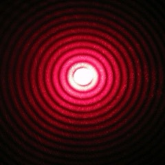
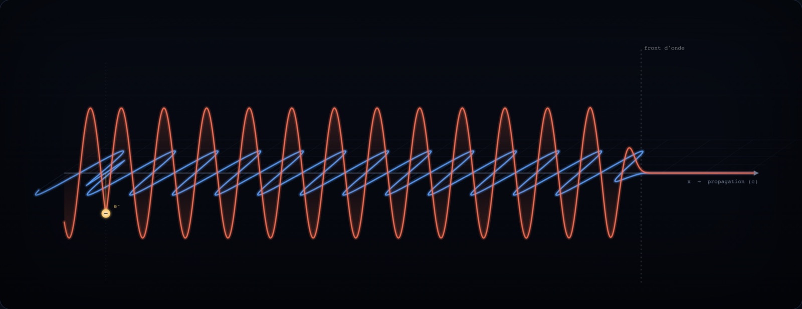
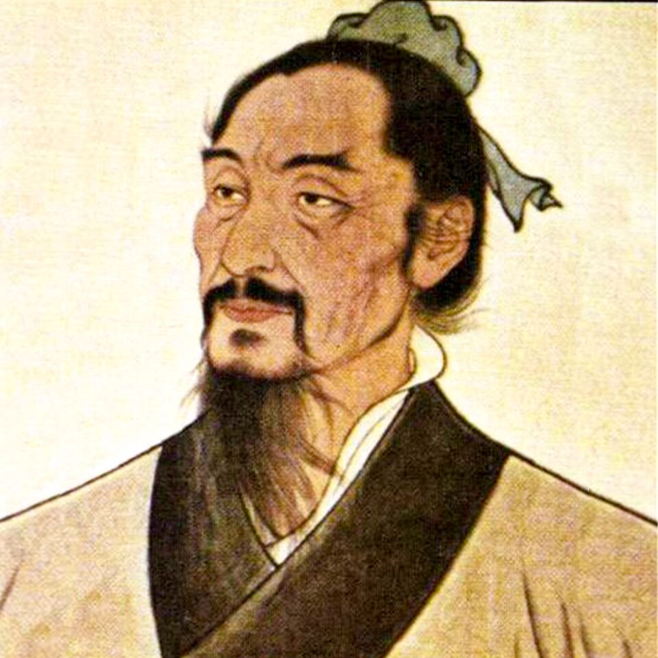
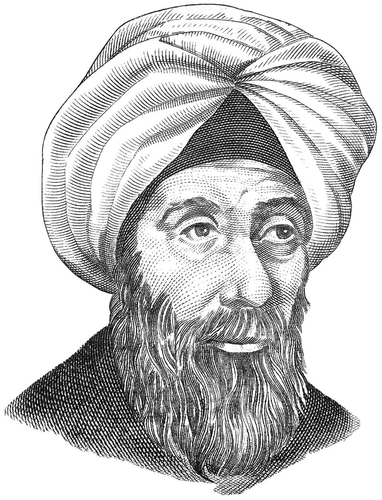
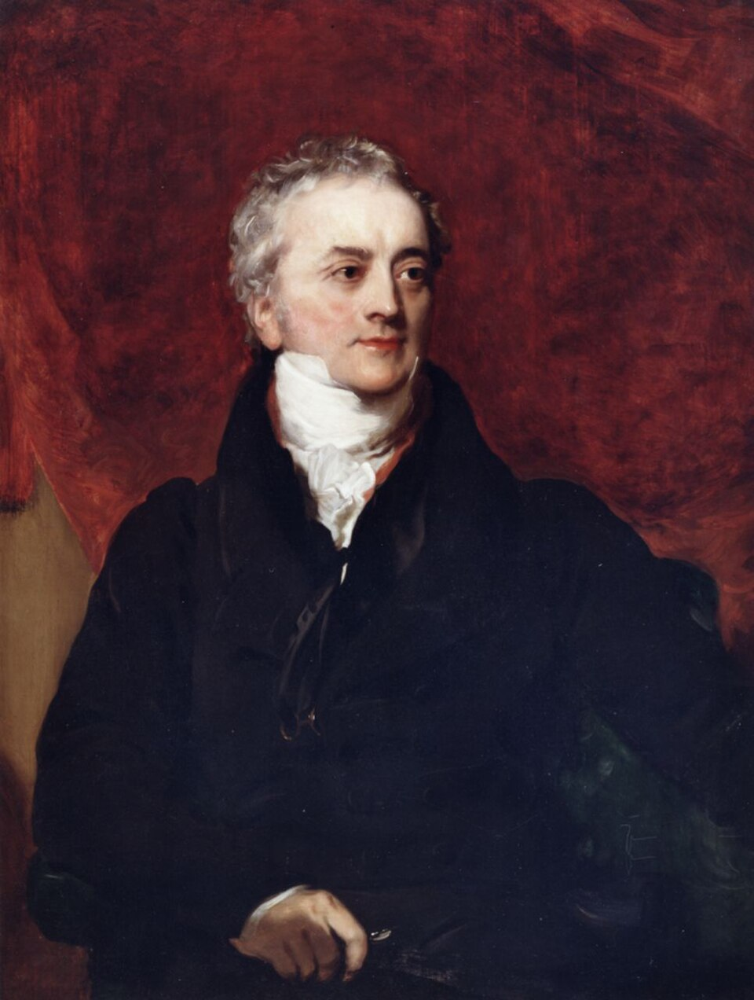

Dossier XXVIII · Physique de la lumière
La Lumière
Éteignez tout, allumez une bougie : la pièce revient. Ce dossier suit ce qui s'est passé entre la flamme et vos yeux — et ce que vingt-cinq siècles de questions en ont tiré.
« Voir n'est donc pas recevoir directement le monde. Voir, c'est interpréter de la lumière. »
Portraits des savants Maxwell en action ↗ Accueil ECI



Provoxys × Samlepirateavec la participation de Inepties 30 chapitres · 37 ateliers22 formules · 19 portraits
Pourquoi ce dossier
La chose la plus familière, et l'une des plus étranges
La lumière est ce que nous croyons connaître le mieux : elle est là dès l'ouverture des yeux. Elle est aussi ce qui a résisté le plus longtemps à toute réponse simple. Onde ? Particule ? Vibration d'un éther ? Chaque siècle a cru trancher, et chaque siècle a dû rouvrir le dossier.
Ce que raconte cette page n'est donc pas une définition, mais une méthode : comment on transforme une question vague en expérience précise. Un trou dans un mur, un prisme acheté à une foire, une roue dentée entre Suresnes et Montmartre, une dalle de grès flottant sur du mercure, deux fentes éclairées un photon à la fois, un cristal pompé par le Soleil. À chaque fois, la même question : que devrait-on observer si… ?
Le texte du live est ici intégral, mot pour mot. Autour, le dossier ajoute : des encadrés qui désamorcent les phrases fausses qu'on entend partout, vingt-deux formules dont chacune se lit à voix haute, trente-sept ateliers où l'on manipule la physique au lieu de la regarder, et un appareil critique où chaque affirmation est sourcée.
Fil conducteur
- OuvertureUne bougie, trois étapes, une grille de lecture
- Acte I · VoirL'œil n'émet pas : il reçoit. Mozi, Alhazen, Kepler
- Acte II · CouleurLe prisme ne fabrique rien : il sépare
- Acte III · VitesseD'un retard sur Io à la définition du mètre
- Acte IV · OndeLumière + lumière = obscurité, puis Maxwell
- Acte V · ÉtherRien à trouver, et un espace-temps à la place
- Acte VI · PhotonL'énergie arrive par paquets — et les franges restent
- Acte VII · DomestiquéeLaser, LED, fibre : le quantique au quotidien
- Acte VIII · IntricationDes corrélations qu'aucun modèle local ne reproduit
- Acte IX · ArchiveChaque spectre est un document d'époque
Objectif 1
Suivre
Lire n'importe quelle situation lumineuse avec la même grille : source → propagation → détection. Elle suffit à dissoudre la moitié des malentendus.
Objectif 2
Distinguer
Séparer ce qu'une expérience établit (un comportement ondulatoire, des échanges d'énergie discrets) de ce qu'on lui fait dire (« la lumière EST une onde »).
Objectif 3
Lire un résultat
Prendre une annonce de 2026 et savoir la lire : avec ses barres d'erreur, ses conditions de mesure et ce qu'elle ne montre pas.
Plan du dossier
Neuf actes, trente chapitres
La bougie et la grille
Source, propagation, détection — et ce qu'est vraiment une onde électromagnétique.
Voir
De l'œil qui émettrait des rayons à la lumière qui entre. Mozi, Ibn al-Haytham, Kepler.
Rayons et couleurs
Réflexion, réfraction, moindre temps, arc-en-ciel, prisme, spectroscopie.
Mesurer c
Rømer, Bradley, Fizeau, Foucault, Michelson — jusqu'à la définition de 1983.
Le triomphe de l'onde
Young, Fresnel, Malus, puis Maxwell qui unifie et Hertz qui confirme.
L'éther meurt
Michelson-Morley, la relativité restreinte, la lumière dans une géométrie courbe.
Le photon
Planck, Einstein, Compton — et la double fente, un photon à la fois.
Lumière domestiquée
Absorber, diffuser, polariser ; laser, LED, fibres, sécurité, frontières.
L'intrication
Bell, CHSH, SPDC, et ce que montrent réellement les expériences de 2025-2026.
Archive de l'Univers
Spectres, Doppler-Fizeau, décalage vers le rouge, fond diffus — et ce qui reste ouvert.
Mode pressé
Neuf phrases, une par acte. Si vous ne lisez que ça, vous avez le dossier.
- OuvertureVoir n'est pas recevoir le monde : c'est interpréter de la lumière, entre une source, un trajet et un détecteur.
- Acte I · VoirL'œil n'éclaire rien : la lumière vient des objets, va en ligne droite, et un simple trou dans un mur le prouve.
- Acte II · CouleursLe prisme n'invente pas les couleurs ; il les sépare — et un CD dans une boîte fait pareil.
- Acte III · VitesseLa lumière est en retard sur Io, bloquée par une roue dentée, puis si bien mesurée qu'on l'a fixée : c définit le mètre depuis 1983.
- Acte IV · OndeLumière plus lumière peut donner de l'obscurité : des franges, une équation, et Maxwell découvre que la lumière est électromagnétique.
- Acte V · ÉtherIl n'y a pas de vent d'éther ; il y a un espace-temps où c est la même pour tous.
- Acte VI · PhotonL'énergie de la lumière arrive par paquets proportionnels à la fréquence — et pourtant, un photon à la fois, les franges reviennent.
- Acte VII · DomestiquéeÉmission stimulée, verre pur, semi-conducteurs : le laser, la fibre et la LED sont de la physique quantique devenue quotidienne.
- Acte VIII · IntricationDeux photons peuvent être corrélés au-delà de tout modèle local — sans jamais permettre de communiquer plus vite que la lumière.
- Acte IX · ArchiveChaque spectre est une archive : la lumière nous montre l'Univers tel qu'il était, jusqu'à 380 000 ans après le Big Bang.
Laboratoires interactifs
Trente-sept ateliers, plus un compagnon
Chaque atelier est calculé, pas illustré : les rayons obéissent à la loi de Snell, les franges à λD/a, les photons sont tirés au hasard dans la vraie loi de probabilité, et les valeurs affichées sont recalculées à chaque déplacement de curseur. Ils sont placés dans le chapitre auquel ils appartiennent ; cette page les rassemble.
L5 · Le prisme de Newton
Un faisceau blanc, un prisme, un second prisme dans la couleur isolée : l'experimentum crucis qu'on refait soi-même.
Acte II · ch. 8L12 · L'onde E et B
Deux champs perpendiculaires qui s'engendrent l'un l'autre et avancent, sans aucun milieu pour les porter.
Ouverture · ch. 2L19 · Un photon à la fois
Des impacts ponctuels, tirés au hasard dans la loi cos²·sinc² : les franges apparaissent sans qu'aucun photon ne se partage.
Acte VI · ch. 21L8 bis · Le spectromètre maison
Une boîte, une fente, un morceau de CD, une webcam : continu, raies d'émission, raies de Fraunhofer.
Acte II · ch. 10L21 · Les polariseurs
Deux filtres croisés éteignent tout ; un troisième glissé à 45° rallume. Le « paradoxe » qui n'en est pas un.
Acte VII · ch. 22L3 bis · Du miroir au diffuseur
Une seule commande : la rugosité. La même surface passe du reflet net à l'étalement diffus quand elle dépasse λ/8.
Acte II · ch. 7L28 · L'arc-en-ciel
Le trajet d'un rayon dans une goutte, la courbe de déviation et son extrémum — et pourquoi le ciel est sombre entre les deux arcs.
Acte II · ch. 7L32 · Les lames minces
Une bulle de savon n'a aucun pigment. Sa couleur est ici calculée à partir du spectre réfléchi, par les fonctions colorimétriques CIE.
Acte IV · ch. 14Les trente-sept ateliers, dans l'ordre du dossier
Compagnon externe · Visualiseur Maths & Physique
Onde électromagnétique : Maxwell en action
Les trente-sept ateliers de cette page illustrent la physique. Celui-ci la résout : une simulation FDTD des équations de Maxwell, où le champ électrique et le champ magnétique s'engendrent réellement l'un l'autre, image après image. En ruban 3D, ou dans un bac à sable 2D avec miroirs, lames diélectriques et fentes de Young. Trois niveaux de lecture, de l'intuition aux équations. Il est signé Samlepirate, comme le Dossier VII qui l'annonçait déjà.

Soixante-huit mots
Le lexique du dossier
Le glossaire du live, intégral, rangé en six familles. Chaque définition est celle du script : cliquez un terme pour l'ouvrir, ou filtrez.
Aucun terme ne correspond — essayez un mot plus court.
Voir et former une image
Chambre noire (camera obscura)
— pièce ou boîte obscure percée d'un petit trou, sur le mur opposé duquel se forme une image renversée.
Aberration chromatique
— défaut d'une lentille qui ne focalise pas toutes les couleurs au même point, parce que l'indice dépend de la longueur d'onde.
Résolution
— plus petit détail qu'un instrument peut séparer ; limitée par la longueur d'onde et l'ouverture.
Métamère
— deux lumières de spectres différents qui produisent la même sensation colorée.
Réfraction
— changement de direction associé au passage entre des milieux différents.
Réflexion totale interne
— renvoi intégral de la lumière à l'interface vers un milieu d'indice plus faible, au-delà de l'angle limite.
Indice de réfraction
— grandeur sans unité caractérisant le ralentissement de la lumière dans un milieu (1 dans le vide, 1,33 dans l'eau, 1,5 dans le verre).
Réflexion spéculaire / diffuse
— renvoi de la lumière par une surface lisse à l'échelle de la longueur d'onde (miroir : l'image est conservée) ou rugueuse (papier, mur : la lumière repart dans toutes les directions, l'image est perdue).
Rugosité (critère de Rayleigh)
— une surface se comporte en miroir si la hauteur de ses aspérités reste inférieure à λ/(8 cos θ) ; le même objet est lisse ou rugueux selon la longueur d'onde.
Speckle
— grain scintillant d'une tache laser sur une surface rugueuse, interférence entre les ondelettes renvoyées par les facettes.
Principe de Babinet
— un obstacle et une ouverture de même forme donnent la même figure de diffraction (hors du faisceau direct) ; c'est pourquoi un cheveu diffracte comme une fente.
Rayons, couleurs et spectres
Dispersion
— variation de l'indice, donc de la déviation, avec la longueur d'onde ; c'est ce qui étale le spectre du prisme.
Spectre
— répartition du rayonnement selon la fréquence, la longueur d'onde ou l'énergie.
Raie spectrale
— ligne brillante (émission) ou sombre (absorption) à une longueur d'onde précise, signature d'un élément.
Réseau de diffraction
— surface portant des milliers de traits par millimètre qui disperse la lumière par interférence ; un CD en est un.
Spectromètre / spectroscope
— instrument qui sépare la lumière selon sa longueur d'onde (prisme ou réseau) et l'enregistre.
Spectre de bandes
— spectre en larges bosses, typique des luminophores (LED blanches, fluocompactes), entre le continu thermique et les raies d'un gaz.
Absorption
— transfert de l'énergie lumineuse à la matière.
Diffusion
— redistribution de la lumière dans différentes directions par la matière (Rayleigh pour les petites particules, Mie pour les gouttelettes).
Diffusion de Mie
— diffusion par des particules de taille comparable ou supérieure à la longueur d'onde (gouttelettes) ; peu dépendante de la couleur, d'où le blanc des nuages et du brouillard.
Effet Raman
— diffusion inélastique : une infime fraction des photons échange un quantum de vibration avec la molécule et change de longueur d'onde (1928).
Température de couleur
— température du corps noir dont la teinte se rapproche le plus d'une source, en kelvins (2 700 K chaud, 6 500 K lumière du jour).
Indice de rendu des couleurs (IRC)
— note de 0 à 100 de la fidélité des couleurs des objets sous une source, comparée à une source continue de référence.
Photométrie / radiométrie
— mesure de la lumière selon la perception humaine (lumens, lux) / selon la physique (watts, toutes longueurs d'onde).
Lumen, lux, candela
— flux lumineux perçu (lm), éclairement d'une surface (lx = lm/m²), intensité dans une direction (cd, unité de base du SI) ; grandeurs photométriques, pondérées par la sensibilité de l'œil.
L'onde
Onde électromagnétique
— variation couplée d'un champ électrique et d'un champ magnétique, se propageant sans support matériel.
Fréquence
— nombre d'oscillations par seconde, mesuré en hertz.
Longueur d'onde
— distance spatiale correspondant à une période d'oscillation.
Interférence
— combinaison d'amplitudes pouvant produire renforcement ou atténuation.
Interfrange
— distance entre deux franges brillantes voisines ; proportionnelle à la longueur d'onde.
Diffraction
— étalement et interférence d'une onde lorsqu'elle rencontre une ouverture ou un obstacle.
Polarisation
— organisation de l'orientation du champ électrique d'une onde lumineuse.
Biréfringence
— propriété d'un cristal qui sépare la lumière en deux faisceaux selon sa polarisation (spath d'Islande).
Loi de Malus
— l'intensité transmise par un polariseur tourné d'un angle θ par rapport à la polarisation incidente vaut I₀ cos²θ (1809).
Cohérence
— capacité de deux portions de lumière à interférer de façon stable ; un laser est très cohérent, une flamme très peu.
Vitesse de phase
— vitesse de déplacement des crêtes d'une onde ; peut dépasser c sans transporter d'information.
Vitesse de groupe
— vitesse de l'enveloppe d'une impulsion dans un milieu ; c'est elle qui ralentit dans la lumière lente, pas c.
Éther luminifère
— milieu hypothétique du XIXe siècle censé porter les ondes lumineuses ; abandonné après Michelson-Morley et la relativité.
Aberration stellaire
— petit déplacement apparent des étoiles dû à la combinaison du mouvement de la Terre et de la vitesse finie de la lumière (Bradley, 1728).
Les quanta
Photon
— quantum du champ électromagnétique ; le mot est de Lewis (1926), l'idée d'Einstein (1905).
Quantum (pl. quanta)
— quantité discrète d'énergie échangée, proportionnelle à la fréquence.
Corps noir
— modèle idéal absorbant tout rayonnement incident et émettant un spectre qui ne dépend que de sa température.
Effet photoélectrique
— éjection d'électrons d'un matériau éclairé, au-dessus d'une fréquence seuil.
Effet Compton
— allongement de la longueur d'onde d'un rayon X diffusé par un électron, qui ne dépend que de l'angle (1923).
Amplitude
— grandeur liée, dans une description classique, à l'intensité du champ ; en physique quantique, nombre dont le carré donne une probabilité.
Complémentarité
— principe de Bohr : information de chemin et visibilité des franges s'excluent partiellement, et la somme des deux est bornée.
Information de chemin
— toute trace physique permettant, même en principe, de savoir par où un photon est passé.
Détecteur de photons uniques
— dispositif capable de signaler l'absorption d'un photon individuel, avec une efficacité et un bruit à caractériser.
Pression de radiation
— force exercée par la lumière absorbée ou réfléchie ; p = E/c ; mesurée par Lebedev (1901) ; principe des voiles solaires.
La lumière domestiquée
Émission stimulée
— émission d'un photon identique à un photon incident (même fréquence, direction, phase) ; principe du laser.
Inversion de population
— situation, hors équilibre, où plus d'atomes sont excités que dans l'état fondamental ; nécessaire au laser.
Mode guidé
— configuration stable dans laquelle la lumière se propage dans une fibre optique.
Génération de seconde harmonique
— fusion de deux photons en un photon de fréquence double dans un cristal non linéaire (Franken, 1961).
Lumière lente
— impulsion dont la vitesse de groupe est réduite, jusqu'à 17 m/s dans un condensat (Hau, 1999) ; chaque photon va toujours à c entre deux atomes.
Lumière comprimée (squeezed light)
— état où le bruit quantique d'une grandeur est réduit au prix de l'autre ; utilisée dans LIGO et Virgo.
Effet Tcherenkov
— onde de choc lumineuse émise par une particule chargée plus rapide que la lumière dans le milieu (v > c/n) ; halo bleu des réacteurs (1934).
Accord de phase
— condition, dans un cristal non linéaire, pour que les photons produits se renforcent au lieu de s'annuler ; c'est la conservation de la quantité de mouvement.
Intrication et cosmos
Intrication
— propriété d'un état quantique commun qui ne se décompose pas en états indépendants de ses parties.
CHSH
— forme d'inégalité de Bell (Clauser, Horne, Shimony, Holt, 1969) : S ≤ 2 pour les modèles locaux, jusqu'à 2√2 en mécanique quantique.
Variables cachées locales
— hypothèse selon laquelle les résultats de mesure sont fixés à l'avance par des propriétés locales ; les tests de Bell la contredisent.
SPDC
— conversion paramétrique spontanée descendante : processus non linéaire probabiliste produisant des paires de photons à partir d'une lumière de pompe.
Fidélité
— mesure de proximité, entre 0 et 1, entre un état quantique préparé et un état cible.
Concurrence
— mesure d'intrication à deux qubits, de 0 (séparable) à 1 (maximale).
Taux de paires
— nombre de paires de photons produites ou détectées par seconde, à donner avec ses conditions.
Téléportation quantique
— transfert d'un état quantique via une paire intriquée, une mesure conjointe et un message classique ; rien de matériel ne voyage.
Décalage vers le rouge (redshift)
— allongement des longueurs d'onde d'une source, par effet Doppler (mouvement) ou par expansion de l'Univers (cosmologique).
Effet Doppler-Fizeau
— décalage de la fréquence, donc des raies spectrales, d'une source en mouvement (Doppler 1842, Fizeau 1848).
Fond diffus cosmologique
— rayonnement fossile émis ~380 000 ans après le Big Bang, observé aujourd'hui à 2,725 K.
Ouverture
La chose la plus familière et l'une des plus étranges
Trois chapitres pour poser le décor : une bougie dans une pièce noire, une grille de lecture qui vaudra jusqu'à la fin, et le vocabulaire minimal — λ, ν, c, n — sans lequel la suite reste opaque.
Ouverture
La bougie
Éteignez toutes les lampes d'une pièce. Allumez une bougie. Immédiatement, les murs, les objets et les visages réapparaissent.
Cette scène semble banale. Pourtant, elle contient presque toute l'histoire de la lumière.
La flamme transforme de l'énergie chimique en rayonnement. Ce rayonnement traverse la pièce. Une partie est absorbée par les objets, une autre est réfléchie. Une infime fraction entre dans nos yeux, atteint la rétine, déclenche des signaux électriques, puis notre cerveau construit une image.
Voir n'est donc pas recevoir directement le monde. Voir, c'est interpréter de la lumière.
La lumière nous permet aussi de regarder dans le passé. Celle du Soleil met environ 8 minutes et 19 secondes à nous parvenir. Celle de la galaxie d'Andromède voyage pendant environ 2,5 millions d'années. Quand nous observons le ciel, nous ne voyons jamais les astres tels qu'ils sont « maintenant », mais tels qu'ils étaient lorsque leur lumière est partie.
Sam expliqueL1
À faireLaissez la bougie allumée et poussez « Brume » à fond ; regardez ce qui apparaît autour de la flamme. Puis basculez « Source » sur Laser sans toucher au reste.
Ce que ça montreMême brume, même œil, deux images. Le laser envoie tout dans une seule direction : il y a un trajet, et les gouttelettes le révèlent. La bougie envoie dans toutes les directions : il n'y a pas de trajet à révéler, seulement un halo qui s'éteint avec la distance. Et dans l'air propre, ni l'un ni l'autre ne se voit de côté — on ne voit jamais la lumière, on voit ce qu'elle éclaire.
Et ce n'est que le début. La même réalité physique peut former un arc-en-ciel, transporter une conversation dans une fibre optique, découper du métal avec un laser, révéler la composition d'une étoile ou produire des corrélations quantiques impossibles à reproduire avec une physique classique locale.
Alors, qu'est-ce que la lumière ?
Une onde ? Une particule ? Une vibration ? Un flux d'énergie ? Un messager de l'Univers ?
La réponse moderne est plus subtile : la lumière n'est ni une onde classique ni une pluie de petites billes classiques. C'est un phénomène quantique associé au champ électromagnétique. Selon la manière dont nous l'émettons, la faisons voyager et la mesurons, elle manifeste des propriétés ondulatoires ou des échanges d'énergie discrets que nous appelons photons.
Pour comprendre cette réponse, il faut refaire le chemin de celles et ceux qui ont appris à interroger la lumière. Ce chemin va de Mozi et d'Ibn al-Haytham à Newton, Young et Maxwell, puis à Planck et Einstein, jusqu'aux lasers, aux fibres optiques et aux photons intriqués produits, en 2026, dans un cristal éclairé par le Soleil.
Partie 1 · la grille
Source, propagation, détection
Avant de parler d'histoire ou de mécanique quantique, adoptons une grille très simple. Toute situation impliquant de la lumière comporte trois étapes :
- une source émet du rayonnement ;
- ce rayonnement se propage et interagit éventuellement avec de la matière ;
- un détecteur l'absorbe et produit un résultat mesurable.
Une source peut être le Soleil, une flamme, une LED, un laser ou un atome excité. Un détecteur peut être un œil, un capteur photographique, une cellule solaire, une antenne radio ou un détecteur de photons uniques.
Cette grille évite une confusion fréquente : nous ne voyons pas un rayon lumineux passer de côté dans un espace parfaitement vide. Nous voyons de la lumière lorsqu'elle entre dans notre œil. Si un faisceau laser devient visible dans la fumée, c'est parce que des particules diffusent une partie de sa lumière vers nous.
La lumière transporte de l'énergie et de la quantité de mouvement. Elle peut chauffer une surface, arracher des électrons à un métal ou exercer une pression minuscule. Elle peut également transporter de l'information : une couleur, une image, un signal internet ou l'état d'un système quantique.
Nous reviendrons à cette grille à chaque étape du récit. Chaque grande découverte sur la lumière a consisté à changer une source, un trajet ou un détecteur, et à regarder ce qui changeait dans le résultat.
Partie 2 · le vocabulaire
Qu'est-ce qu'une onde électromagnétique ?
Une onde est une perturbation qui se propage. Une vague transporte de l'énergie à la surface de l'eau sans transporter toute l'eau avec elle. Le son est une variation de pression qui se propage dans un milieu matériel.
La lumière est différente : elle n'a pas besoin d'air, d'eau ou d'un « éther » matériel pour voyager. Dans sa description classique, elle est une variation couplée d'un champ électrique et d'un champ magnétique. Ces champs oscillent perpendiculairement l'un à l'autre et à la direction de propagation, et la perturbation avance.
Sam expliqueL12
À faireRéglez la fréquence et lisez la longueur d'onde qui en découle. Passez en polarisation circulaire, puis coupez « Montrer B » pour voir E seul.
Ce que ça montreDeux champs perpendiculaires, en phase, tous deux perpendiculaires au sens de la marche : chacun engendre l'autre, et l'ensemble n'a besoin d'aucun support pour avancer. λν = c toujours : monter la fréquence, c'est raccourcir la longueur d'onde. L'amplitude de B est très exagérée pour rester visible ; elle vaut réellement |E|/c.
Dans le vide, la vitesse de propagation est exactement :
Se lit« c égale deux cent quatre-vingt-dix-neuf millions sept cent quatre-vingt-douze mille quatre cent cinquante-huit mètres par seconde, exactement »« Exactement » n'est pas une coquetterie : depuis la 17e Conférence générale des poids et mesures (1983), cette valeur est posée, sans incertitude, et c'est le mètre qui en est déduit — la distance parcourue par la lumière en 1/299 792 458 seconde.
On ne « mesure » donc plus c : on réalise le mètre à partir d'une mesure de temps et de fréquence. Le chapitre 13 raconte comment on en est arrivé à cette inversion.
Cette valeur est fixée par définition dans le Système international depuis 1983 et sert à définir le mètre. Nous verrons plus loin comment on en est arrivé là.
Une onde lumineuse se caractérise notamment par sa fréquence ν, sa longueur d'onde λ, son amplitude, sa phase et sa polarisation. Dans le vide :
Se lit« c égale lambda nu »La lettre grecque ν se dit « nu » ; c'est la fréquence, en hertz — jamais « v ». λ, « lambda », est la longueur d'onde, en mètres. Le produit d'une longueur par un nombre de fois par seconde donne bien une vitesse.
Si la fréquence monte, la longueur d'onde baisse. Le visible occupe environ 380 à 780 nm, soit environ 790 à 385 térahertz.
Si la fréquence augmente, la longueur d'onde diminue. Les ondes radio ont de grandes longueurs d'onde ; les rayons gamma en ont de très petites. La lumière visible n'occupe qu'une bande étroite de cet immense spectre, approximativement de 380 à 780 nanomètres selon les conventions et la sensibilité de l'observateur. Il n'existe pas de frontière physiologique parfaitement nette où le visible commencerait ou s'arrêterait pour tout le monde.
Dans un matériau transparent, la vitesse de propagation est généralement plus faible que c. On l'écrit souvent :
Se lit« v égale c sur n »La barre de fraction se lit « sur » (ou « divisé par »). n est supérieur ou égal à 1 dans les milieux transparents usuels, donc v reste inférieur ou égal à c.
Dans l'eau (n ≈ 1,33), la lumière va à environ 225 000 km/s. C'est une vitesse de phase effective : la fréquence ne change pas au passage d'un milieu à l'autre, c'est la longueur d'onde qui se raccourcit. Retenez ce chiffre : c'est lui qui rendra possible l'effet Tcherenkov, au chapitre 22.
où n est l'indice de réfraction du milieu : environ 1,33 pour l'eau, environ 1,5 pour le verre ordinaire, 2,4 pour le diamant. Ce ralentissement effectif et la différence d'indice entre deux milieux expliquent la réfraction. La fréquence, elle, ne change pas au passage : c'est la longueur d'onde qui se raccourcit.
Aller plus loin · compagnon externe
Voir les équations de Maxwell se résoudre
L'atelier L12 ci-dessus montre une onde ; le Visualiseur Maths & Physique la calcule. Sa simulation FDTD résout les équations de Maxwell pas de temps par pas de temps : on voit E engendrer B, et B engendrer E. Amplitude, longueur d'onde, indice du milieu, miroir, lame diélectrique — tout est réglable, avec les équations en regard.
Acte I · chapitres 3 à 6
Voir : de l'œil qui émet à la lumière qui entre
Pendant vingt siècles, la question n'est pas « qu'est-ce que la lumière ? » mais « comment voyons-nous ? ». Un trou dans un mur, sept miroirs, plusieurs lampes et un disque gradué finiront par retourner la réponse.
Partie 3 · l'Antiquité
Comment voyons-nous ?
Pendant des siècles, la question centrale n'était pas « qu'est-ce que la lumière ? », mais « comment voyons-nous ? »
Avant toute théorie, il y a l'usage. Les humains maîtrisent le feu depuis au moins 400 000 ans, avec des indices plus anciens qui restent discutés, et fabriquent des lampes à graisse au Paléolithique supérieur : celles de Lascaux ont environ 17 000 ans. On éclaire, on se chauffe, on se reflète dans l'eau et dans les premiers miroirs polis d'Égypte et de Mésopotamie, longtemps avant de se demander ce qui voyage entre la flamme et l'œil.
Dans l'Antiquité grecque, plusieurs théories coexistent. Certains penseurs, dans la lignée de Platon et d'Empédocle, imaginent que l'œil émet des rayons qui touchent les objets. Cette idée paraît aujourd'hui étrange, mais elle possède une intuition séduisante : le regard semble se diriger vers les choses. Aristote, lui, refuse l'émission oculaire et décrit la lumière comme l'état d'un milieu transparent activé par une source. En Inde, les écoles Samkhya et Vaisheshika discutent d'une lumière faite d'atomes de feu très rapides.
Euclide, vers 300 avant notre ère, utilise des rayons géométriques pour décrire la vision et la réflexion, avec l'égalité des angles. Héron d'Alexandrie, au premier siècle de notre ère, remarque qu'un rayon réfléchi suit le plus court chemin entre deux points en passant par le miroir : une idée que Fermat généralisera seize siècles plus tard. Ptolémée, vers 160, réalise des mesures de réfraction entre l'air, l'eau et le verre, avec des tables d'angles remarquablement soignées pour l'époque. En Chine, les textes associés à Mozi, au Ve siècle avant notre ère, décrivent le passage de la lumière par une petite ouverture et l'inversion de l'image : une étape importante vers l'idée que la lumière se propage suivant des lignes droites dans un milieu homogène. Un passage des Problèmes, un recueil attribué à Aristote mais probablement postérieur, décrit de même l'image d'une éclipse partielle projetée à travers un petit trou.
Un objet célèbre est parfois présenté comme la plus ancienne lentille : un morceau de cristal de roche poli, d'environ 38 millimètres, découvert à Nimrud en 1850 et daté du VIIIe siècle avant notre ère. Il possède des propriétés optiques — il focalise, il grossit un peu —, mais sa fonction reste incertaine. Le British Museum considère qu'il s'agissait probablement d'un élément décoratif incrusté plutôt que d'un instrument d'optique. Cette prudence est importante : en histoire des sciences, un objet capable de produire un effet n'a pas nécessairement été fabriqué pour cet usage.
Partie 3 · Bassorah, Le Caire
Alhazen et le retournement décisif
Au tournant des Xe et XIe siècles, Ibn al-Haytham, né à Bassorah vers 965 et mort au Caire vers 1040, appelé Alhazen en latin, développe une étude systématique de la lumière et de la vision. Son Livre d'optique, le Kitab al-Manazir, rédigé entre 1011 et 1021 en sept livres, réunit géométrie, observation, expériences et réflexion sur la perception.
Son idée fondamentale est que la lumière provenant d'une source atteint les objets, puis que la lumière émise ou réfléchie par ces objets entre dans l'œil. L'œil n'éclaire pas le monde : il reçoit de la lumière. Il distingue la lumière primaire, celle des corps qui brillent par eux-mêmes, et la lumière secondaire, celle que renvoient les objets éclairés.
Ibn al-Haytham étudie les ombres, les miroirs, la réfraction et les images formées par une petite ouverture. Il vérifie la loi de la réflexion sur sept types de miroirs — plans, sphériques, cylindriques et coniques, convexes et concaves. Il construit un instrument de mesure de la réfraction avec un disque gradué et un quart de cylindre de verre, pour comparer air, eau et verre. Il consacre un traité à la forme de l'image d'une éclipse projetée par une ouverture. Et des expériences avec plusieurs lampes disposées devant une chambre obscure lui permettent de montrer que des faisceaux peuvent se croiser sans que les images se confondent : chaque tache lumineuse sur le mur correspond à une lampe et à une seule.
Il ne faut pas pour autant dire qu'il a, seul et soudainement, « inventé la méthode scientifique ». Les pratiques expérimentales ont une histoire longue et collective, de Ptolémée à ses contemporains. Il est plus juste de le présenter comme l'un des grands pionniers d'une démarche où les hypothèses sur la lumière sont confrontées à des dispositifs contrôlés et à des raisonnements mathématiques.
Une tradition biographique, transmise par Ibn al-Qifti au XIIIe siècle, rapporte qu'après l'échec d'un projet destiné à réguler le Nil, Ibn al-Haytham aurait feint la folie et aurait été placé en résidence surveillée jusqu'à la mort du calife al-Hakim, en 1021. Le cœur de cette histoire est transmis par des biographies médiévales ; les dialogues, le geôlier complice et les scènes de laboratoire souvent ajoutés dans les récits modernes relèvent de la dramatisation.
Son œuvre passe en Europe par une traduction latine, le De aspectibus, à la fin du XIIe ou au début du XIIIe siècle, puis par l'édition imprimée de Friedrich Risner en 1572, l'Opticae thesaurus. Roger Bacon, Witelo, puis Kepler la lisent et la discutent : la perspectiva devient une discipline enseignée dans les universités médiévales.
Partie 3 · l'expérience
La chambre noire
Dans une boîte opaque, percer un petit trou sur une face et placer un écran translucide sur la face opposée. Une image renversée du paysage extérieur apparaît.
Chaque point de l'objet envoie de la lumière dans de nombreuses directions. Le petit trou ne laisse passer qu'un étroit ensemble de directions. Les rayons issus du haut de l'objet atteignent le bas de l'écran, et inversement.
Un trou plus petit améliore d'abord la netteté, mais réduit la luminosité. S'il devient extrêmement petit, la diffraction limite à nouveau la netteté. Cette expérience relie donc l'optique géométrique à l'optique ondulatoire.
Sam expliqueL2
À fairePartez d'un grand trou et rétrécissez-le pas à pas, l'œil sur « Flou total ». Repérez le diamètre où il cesse de descendre, puis changez la profondeur de la boîte et recommencez.
Ce que ça montreDeux flous tirent en sens inverse : la tache géométrique rétrécit avec le trou, la tache de diffraction grandit. Leur somme passe par un minimum, autour de d ≈ √(2λL). La netteté d'un sténopé a donc une limite, et cette limite est fixée par la longueur d'onde — pas par le soin du bricoleur.
Partie 3 · les instruments
Des lunettes au télescope
À partir de la fin du XIIIe siècle, en Italie d'abord, les lunettes correctrices se diffusent en Europe. Elles ne reposent pas encore sur une théorie complète de l'image, mais montrent que des surfaces transparentes courbes peuvent transformer la vision.
En 1604, Johannes Kepler explique que le cristallin et la cornée forment une image renversée sur la rétine. Il sépare ainsi plus clairement le problème optique — former une image — du problème perceptif — interpréter cette image. En 1611, dans sa Dioptrique, il donne la théorie des lentilles et du télescope, et décrit au passage la réflexion totale.
En 1608, des fabricants de lunettes néerlandais, dont Hans Lippershey, construisent les premiers télescopes attestés. Galilée perfectionne rapidement l'instrument et le tourne vers le ciel en 1609. Il observe notamment le relief lunaire et les satellites de Jupiter, qu'il publie en 1610. Un télescope ne rapproche pas physiquement les astres : il collecte davantage de lumière et augmente l'angle apparent sous lequel certains détails sont vus.
Le microscope se développe à la même époque, aux Pays-Bas, autour de 1600 ; son inventeur précis reste débattu. Télescope et microscope élargissent le domaine du visible dans deux directions opposées : vers le très lointain et vers le très petit. Ils rappellent aussi qu'un instrument scientifique ne se contente pas d'agrandir ; il sélectionne, transforme et limite l'information disponible.
Sam expliqueL29
À faireActivez « Rayons de construction », rapprochez l'objet du foyer, puis passez-le en deçà. Refaites la même chose avec une lentille divergente.
Ce que ça montreToute la formation d'image tient dans 1/f = 1/d₀ + 1/dᵢ, et les trois rayons de construction suffisent à la retrouver à la main. L'image bascule du réel au virtuel au passage du foyer : au-delà, un écran la recueille ; en deçà, elle n'existe que dans le prolongement des rayons — c'est la loupe. Une divergente, elle, ne donne jamais d'image sur un écran.
Sam expliqueL33
À faireChoisissez « Myopie », lisez l'écart à la rétine, puis remontez le verre correcteur jusqu'à l'annuler. Vérifiez ensuite où tombent le punctum remotum et le punctum proximum.
Ce que ça montreUn défaut de vision est une affaire de distance : l'image se forme avant la rétine, ou derrière, et le verre ne fait que la ramener dessus. La presbytie est d'une autre nature — ce n'est pas la position qui est fausse, c'est l'accommodation qui ne suit plus, d'où une correction utile seulement de près.
Sam expliqueL31
À faireSur « Lunette ou télescope ? », comparez les deux instruments à diamètre égal et regardez les bords de l'image. Passez ensuite au miroir convexe, puis au concave en déplaçant l'objet de part et d'autre du foyer.
Ce que ça montreUn miroir renvoie toutes les couleurs au même endroit : sa focale vaut R/2, et aucune longueur d'onde n'entre dans la formule. Une lentille, non — son indice dépend de la couleur, donc son foyer aussi. C'est le raisonnement de Newton en 1668, et c'est pourquoi les grands instruments sont tous des miroirs. Le diamètre, lui, décide de deux choses à la fois : la lumière collectée et le pouvoir de résolution.
| Date | Qui | Ce qui est établi |
|---|---|---|
| v. 470-391 av. J.-C. | Mozi (tradition mohiste) | chambre noire et propagation rectiligne |
| v. 300 av. J.-C. | Euclide | Optique : rayons géométriques, égalité des angles |
| Ier siècle | Héron d'Alexandrie | plus court chemin pour la réflexion |
| v. 160 | Ptolémée | tables de réfraction |
| v. 1011-1021 | Ibn al-Haytham | Kitab al-Manazir : l'œil reçoit, il n'émet pas |
| 1572 | Risner | Opticae thesaurus : l'édition imprimée qui diffuse l'œuvre en Europe |
| 1604 | Kepler | image rétinienne |
| 1608 | Lippershey et d'autres | premiers télescopes |
| 1609-1610 | Galilée | l'instrument tourné vers le ciel, et publié |
Acte II · chapitres 7 à 10
Les lois des rayons et la naissance de la couleur
Réfléchir, réfracter, prendre le chemin le plus rapide, se séparer en couleurs. Quatre chapitres où la lumière cesse d'être un mystère métaphysique pour devenir une géométrie — puis un code-barres.
Partie 4 · miroir, eau, arc-en-ciel
Réflexion, réfraction et principe du moindre temps
Lorsqu'un rayon lumineux rencontre une surface, plusieurs phénomènes peuvent se produire simultanément : une partie est réfléchie, une partie transmise, une partie absorbée et parfois une partie diffusée.
Pour la réflexion sur une surface plane, l'angle réfléchi est égal à l'angle d'incidence, les angles étant mesurés par rapport à la normale à la surface.
Miroir ou mur blanc : réflexion spéculaire et réflexion diffuse
Un miroir et une feuille de papier blanc renvoient tous deux presque toute la lumière qu'ils reçoivent. Pourtant l'un montre votre visage et l'autre non. La différence n'est pas dans la quantité de lumière renvoyée, mais dans son organisation.
Sur un miroir, la surface est plane à l'échelle de la longueur d'onde : chaque rayon repart avec l'angle exact de son arrivée, et les rayons voisins restent voisins. Le faisceau garde sa forme, l'image est conservée. C'est la réflexion spéculaire — du latin speculum, miroir. Sur le papier, la surface est un paysage de fibres et de creux bien plus grands que la longueur d'onde : chaque point renvoie la lumière dans toutes les directions, et deux rayons arrivés côte à côte repartent n'importe où. La loi de la réflexion est respectée localement, sur chaque facette microscopique, mais les facettes sont orientées au hasard. C'est la réflexion diffuse. L'image est perdue ; la lumière, elle, est toujours là — c'est même grâce à elle que nous voyons le papier depuis n'importe quel endroit de la pièce, alors qu'un miroir ne se voit que là où il renvoie une source.
Se lit« h plus petit que lambda sur huit cosinus thêta »h est la hauteur typique des aspérités de la surface ; θ, « thêta », l'angle d'incidence, compté depuis la normale. Quand θ grandit (incidence rasante), le cosinus diminue et la condition devient plus facile : une surface rugueuse vue de face devient miroir vue au ras.
Pour le visible (λ ≈ 0,5 µm), un miroir exige des défauts sous ~60 nm ; pour une onde radio de 3 m, un grillage à mailles de 5 cm est « lisse ». C'est le critère qui sépare le reflet net de l'étalement diffus — et qui explique la route mouillée devenue miroir.
Entre les deux, tout est affaire d'échelle. Une surface se comporte en miroir si ses aspérités sont petites devant la longueur d'onde — en pratique, moins d'un huitième de la longueur d'onde, et davantage encore quand on regarde en incidence rasante. C'est pourquoi une route mouillée devient un miroir la nuit : l'eau comble les creux du bitume. C'est pourquoi une feuille de papier ordinaire, vue au ras de la surface, reflète une lampe comme une vitre. Et c'est pourquoi un grillage à mailles de quelques centimètres est un miroir parfait pour les ondes radio de plusieurs mètres, alors qu'il est transparent pour la lumière : le même objet est lisse ou rugueux selon la longueur d'onde qui l'interroge.
Presque tout ce que nous voyons nous parvient par réflexion diffuse : le sol, les murs, les visages, les pages de ce script. Ibn al-Haytham l'avait déjà compris en distinguant la lumière primaire des sources et la lumière secondaire des objets éclairés, renvoyée « de chaque point dans toutes les directions ». Une surface brillante ajoute à cette lumière diffuse une composante spéculaire : le reflet de la fenêtre sur une pomme vernie, l'éclat sur une carrosserie, et cette pointe de lumière dans l'œil que les peintres posent d'un coup de blanc.
Sam expliqueL3 bis
À faireMontez la rugosité jusqu'à ce que le reflet disparaisse. Puis, sans y toucher, passez « Longueur d'onde » du visible aux micro-ondes, puis à la radio.
Ce que ça montre« Poli » n'est pas une propriété de la surface : c'est un rapport à la longueur d'onde. Le critère h < λ/(8 cos θ) tranche, et il suffit de changer λ pour que le même mur cesse de diffuser et se mette à réfléchir comme un miroir. L'incidence compte aussi : plus le rayon rase la surface, plus le seuil se relâche.
Sam expliqueL30
À faireDéplacez le miroir : le mur en face, puis le sol, puis le mur de côté, en surveillant les trois compteurs d'axes. Présentez ensuite la feuille au miroir des deux façons, en la tournant puis en la basculant. Et dans « Quelle taille de miroir ? », changez la distance en surveillant la hauteur nécessaire.
Ce que ça montreUn miroir inverse l'axe qui lui est perpendiculaire, et seulement celui-là. Devant un miroir mural c'est l'avant-arrière ; au sol, le haut-bas ; et la gauche-droite ne s'inverse qu'avec un miroir latéral, ce qui n'est jamais la position d'un miroir de salle de bains. Si vous croyez voir un échange gauche-droite, c'est votre propre demi-tour mental : le bouton de pivot le montre, la main rouge change de côté sans que le miroir ait bougé. La feuille tranche : même miroir, deux gestes, deux inversions différentes. Second volet : il vous suffit d'un miroir de la moitié de votre taille, et reculer n'y change rien.
Lorsqu'elle passe d'un milieu à un autre, la lumière change généralement de vitesse et de direction. La loi de la réfraction est établie par Willebrord Snell vers 1621, sans être publiée de son vivant, puis par René Descartes dans sa Dioptrique de 1637 ; elle porte aujourd'hui leurs deux noms :
Se lit« n un sinus i égale n deux sinus r »n est l'indice de réfraction : un nombre sans unité, 1 dans le vide, environ 1,33 dans l'eau, environ 1,5 dans le verre. Les angles i et r se mesurent depuis la normale, la perpendiculaire à la surface, jamais depuis la surface elle-même. « sin » se dit « sinus ».
Si n₂ > n₁, le rayon se rapproche de la normale ; si n₂ < n₁, il s'en écarte, et au-delà d'un angle limite (sin i = n₂/n₁) il n'y a plus de rayon réfracté du tout : c'est la réflexion totale interne, celle qui guidera la lumière dans les fibres du chapitre 23.
Sam expliqueL3
À faireMettez le verre en milieu 1 et l'air en milieu 2, puis montez l'angle d'incidence jusqu'à dépasser l'angle limite. Activez ensuite « Séparer les polarisations s et p » et cherchez l'angle où la courbe p tombe à zéro.
Ce que ça montreSnell dit où part le rayon ; Fresnel dit combien de lumière part de chaque côté — et c'est la seconde question qui décide de ce qu'on voit. Face à une vitre, la réflexion ne pèse que quelques pour cent ; en incidence rasante, la même vitre devient un miroir. À l'angle de Brewster, affiché en bas, la lumière réfléchie ne garde qu'une seule polarisation : c'est de là que viennent les lunettes polarisantes.
Cette formule explique pourquoi une paille plongée dans l'eau paraît brisée et comment une lentille dévie la lumière pour former une image. Elle explique aussi la réflexion totale : quand la lumière passe d'un milieu d'indice élevé vers un milieu d'indice plus faible, au-delà d'un certain angle, plus aucun rayon ne sort. Toute la lumière est renvoyée. C'est ce qui guidera un jour la lumière dans les fibres optiques.
Bien avant la loi de Snell, l'arc-en-ciel avait déjà livré sa géométrie. Vers 1304, le dominicain Thierry de Freiberg remplit des sphères de verre avec de l'eau pour imiter une goutte de pluie et suit le trajet d'un rayon de soleil : une réfraction en entrant, une réflexion sur la face interne, une nouvelle réfraction en sortant — c'est l'arc principal ; deux réflexions internes donnent l'arc secondaire, aux couleurs inversées. C'est la première explication correcte, obtenue par expérience et non par autorité. À la même époque, en Perse, Kamal al-Din al-Farisi, commentateur d'Ibn al-Haytham, parvient indépendamment au même résultat. La réflexion à l'intérieur de la goutte est partielle, non totale : une partie de la lumière ressort à chaque rebond, et c'est pourquoi l'arc secondaire est plus pâle.
Sam expliqueL28
À faireLaissez tourner « Le film » une fois en entier. Passez à « Dans la goutte » et balayez le point d'entrée b : cherchez la zone où l'angle de sortie ne bouge presque plus. Finissez par « Pourquoi un arc ».
Ce que ça montreUne goutte ne renvoie pas la lumière dans une direction, elle la renvoie dans toutes — sauf qu'il existe un angle où les rayons s'entassent, parce que la déviation y passe par un extremum. C'est cet entassement qui fait l'arc ; et comme l'angle dépend de la couleur, l'arc s'étale en spectre. Deux réflexions internes au lieu d'une donnent l'arc secondaire, plus haut et aux couleurs inversées.
Descartes applique la même loi, en 1637, à une goutte d'eau, et calcule l'angle de l'arc-en-ciel : environ 42 degrés par rapport à la direction opposée au Soleil pour l'arc principal.
Au XVIIe siècle, Pierre de Fermat propose une vision plus globale : entre deux points, la lumière suit un trajet pour lequel le temps de parcours est stationnaire, souvent minimal dans les situations simples. La ligne droite dans un milieu homogène, la loi de la réflexion et la loi de la réfraction peuvent être retrouvées à partir de ce principe. Héron l'avait pressenti pour la réflexion ; Fermat l'étend à la réfraction, en supposant, contre Descartes, que la lumière va moins vite dans l'eau que dans l'air. Il faudra deux siècles pour le vérifier.
Se lit« delta de l'intégrale de A à B de n de s sur c, dé s, égale zéro »Le δ (« delta » minuscule) signifie « petite variation » : le temps de parcours ne change pas au premier ordre quand on déforme légèrement le trajet — il est stationnaire, souvent minimal. Le ∫ se dit « intégrale » : une somme continue le long du chemin. Le « dé s » final est le d droit de l'élément de longueur, à ne pas confondre avec le δ du début.
La ligne droite, la loi de la réflexion et la loi de Snell en découlent toutes les trois. C'est le premier « principe variationnel » de la physique : au lieu de dire ce que fait la lumière en chaque point, on dit ce que le trajet entier optimise.
Sam expliqueL4
À faireBalayez « Point d'entrée dans l'eau » jusqu'au temps le plus court, comparez-le à celui de la ligne droite, puis lisez le rapport des sinus à cet endroit précis.
Ce que ça montreLe trajet le plus rapide n'est pas le plus court. Et au minimum, le rapport des sinus divisés par les vitesses vaut exactement 1 : on retrouve la loi de Snell sans avoir parlé d'optique une seule fois. Attention au piège de vocabulaire : la lumière ne « choisit » rien, ce principe est une reformulation du comportement des ondes, pas une intention.
| Date | Qui | Ce qui est établi |
|---|---|---|
| v. 1304 | Thierry de Freiberg, al-Farisi | géométrie de l'arc-en-ciel sur des sphères d'eau |
| v. 1621 | Snell | la loi de la réfraction, non publiée de son vivant |
| 1637 | Descartes | Dioptrique et Météores (arc-en-ciel quantitatif) |
| 1657-1662 | Fermat | principe du moindre temps |
| 1665 | Grimaldi | diffraction : le mot et l'observation, publiés après sa mort |
Partie 5 · Woolsthorpe, 1665
Newton, le prisme et la tache oblongue
Au XVIIe siècle, on débat encore de l'origine des couleurs. Le prisme colore-t-il la lumière, comme un pigment colore une surface, ou révèle-t-il quelque chose qui était déjà présent ?
En 1665 et 1666, pendant que la peste ferme l'université de Cambridge, Isaac Newton travaille chez lui, à Woolsthorpe. Dans une pièce assombrie, il fait entrer par un petit trou du volet un mince faisceau de lumière solaire et le dirige vers un prisme. Sur le mur d'en face apparaît une bande colorée allant du rouge au violet. Ce qui l'intrigue, c'est sa forme : la tache est oblongue, environ cinq fois plus longue que large — treize pouces et quart sur deux pouces et cinq huitièmes, écrira-t-il —, alors que la loi de la réfraction, appliquée à une lumière homogène, prévoit une tache presque ronde.
Newton isole ensuite une couleur du spectre et la fait traverser un second prisme. Le rouge reste rouge ; il est dévié, mais ne se décompose pas en nouvelles couleurs. Chaque couleur possède sa « réfrangibilité » propre, et c'est elle qui étire la tache. En revanche, lorsqu'on rassemble convenablement les différentes composantes du spectre, on retrouve une lumière blanche. Newton appellera cette expérience à deux prismes son experimentum crucis, l'expérience décisive, et la publiera en 1672 dans une lettre à la Royal Society.
La conclusion est capitale : le prisme ne fabrique pas les couleurs. La lumière blanche est un mélange de composantes que le verre dévie différemment parce que son indice dépend de la longueur d'onde. C'est la dispersion.
Sam expliqueL5
À faireEn « Lumière blanche », faites tourner l'incidence i₁ jusqu'à ce que la déviation passe par son minimum. Basculez ensuite sur « Experimentum crucis » pour n'envoyer qu'une couleur dans le second prisme, puis sur « Recomposer le blanc ».
Ce que ça montreLe prisme ne fabrique pas les couleurs, il les sépare, parce que l'indice dépend de la longueur d'onde. La démonstration tient en deux montages : une couleur isolée traverse un second prisme sans se décomposer davantage, et un prisme retourné rassemble le spectre en blanc. Changez de matériau pour voir : à angle égal, le flint disperse nettement plus que le crown.
Cette dépendance de l'indice a une conséquence pratique : une lentille ne focalise pas toutes les couleurs au même point, et les images des lunettes astronomiques sont bordées de franges colorées. Pour la contourner, Newton construit en 1668 un télescope à miroir, où la lumière est réfléchie au lieu d'être réfractée. C'est l'ancêtre de la plupart des grands télescopes actuels.
Newton défend une théorie corpusculaire de la lumière, exposée dans son Opticks de 1704, avec des réserves et des questions ouvertes en fin de volume. Christiaan Huygens développe au contraire, dans son Traité de la lumière présenté en 1678 et publié en 1690, une théorie ondulatoire où chaque point d'un front d'onde émet de petites ondelettes ; il explique notamment la double réfraction du spath d'Islande. Le débat ne sera pas tranché par l'autorité d'un nom, mais par des expériences capables de distinguer les prédictions. Il faudra plus d'un siècle.
Partie 5 · l'œil et le cerveau
La couleur n'est pas une longueur d'onde
Une lumière monochromatique correspond approximativement à une bande étroite de longueurs d'onde. Mais la couleur perçue est une construction du système visuel.
La rétine humaine comporte trois grandes familles de cônes, dont les sensibilités se chevauchent — une idée avancée par Thomas Young dès 1802 et développée par Hermann von Helmholtz. Le cerveau compare leurs réponses. Deux distributions spectrales différentes peuvent donc produire la même sensation colorée : ce sont des métamères. C'est ce qui permet à un écran, avec trois primaires seulement, de nous montrer un coucher de soleil.
Sam expliqueL7
À fairePromenez la longueur d'onde et regardez monter et descendre les trois réponses S, M et L. Activez ensuite « Montrer le métamère » et comparez les deux spectres, puis leurs triplets.
Ce que ça montreL'œil ne mesure pas un spectre : il en tire trois nombres. Deux lumières physiquement différentes qui donnent le même triplet sont, pour vous, la même couleur — c'est le métamérisme. Sans lui, aucun écran à trois primaires ne pourrait vous montrer un coucher de soleil.
Le magenta illustre bien cette différence entre physique et perception. Il ne correspond pas à une bande unique du spectre comme le vert spectral. Il apparaît lorsque notre système visuel reçoit certaines combinaisons de rouge et de bleu-violet, sans vert.
La synthèse additive concerne les lumières : rouge, vert et bleu peuvent être combinés pour produire de nombreuses couleurs, jusqu'au blanc. La synthèse soustractive concerne les pigments et les filtres : ils retirent certaines composantes de la lumière incidente. Cyan, magenta et jaune superposés donnent du noir, ou presque.
Sam expliqueL6
À faireEn additif, montez le rouge et le bleu seuls, et cherchez la couleur obtenue dans le spectre affiché. Passez ensuite en soustractif et empilez les trois filtres l'un après l'autre.
Ce que ça montreDeux logiques opposées : des lumières s'ajoutent et vont vers le blanc, des filtres se retranchent et vont vers le noir. Et le magenta ne se trouve nulle part dans le spectre — aucune longueur d'onde ne lui correspond. C'est une couleur construite par le cerveau quand les cônes rouges et bleus répondent sans le vert.
Partie 5 · la boîte en carton
Au-delà du visible : naissance de la spectroscopie
Le spectromètre utilisé sur le plateau tient dans une boîte en carton noir. Il comporte quatre pièces :
- une fente très fine sur une face — deux lames de cutter ou de rasoir collées à un ou deux dixièmes de millimètre l'une de l'autre. Elle découpe dans la lumière entrante un ruban étroit, pour que chaque couleur donne ensuite une ligne nette et non une tache ;
- un morceau de CD, en face, incliné d'environ soixante degrés. Ses sillons, espacés de 1,6 micromètre, forment un réseau de diffraction par réflexion d'environ 625 traits par millimètre. Chaque couleur y est renvoyée sous un angle différent : pour le premier ordre, le bleu à 450 nanomètres vers 16 degrés, le rouge à 700 nanomètres vers 26 degrés (un DVD, avec des sillons de 0,74 micromètre, écarte deux fois plus) ;
- une webcam qui regarde le CD, là où le spectre se forme, à travers la boîte fermée ;
- un ordinateur, qui affiche l'image et trace l'intensité colonne par colonne : c'est le spectre. Deux raies connues d'une lampe fluorescente, le violet du mercure à 436 nanomètres et son vert à 546, servent à graduer l'axe.
Ce n'est pas un prisme, mais le résultat est le même que chez Newton, par un autre mécanisme : le prisme disperse par réfraction, le CD disperse par interférence entre les milliers de sillons. Dans les deux cas, le blanc s'étale et rien n'est « ajouté ».
Première mesure : une lampe à incandescence ou halogène, ou la lumière du jour. Le spectre est continu, du violet au rouge, sans trou : c'est la signature d'un corps chaud. Puis une LED blanche : un pic bleu étroit et une large bosse jaune-orangée — la LED bleue et le luminophore qui la recouvre. Deux blancs que l'œil ne distingue pas, deux spectres très différents : les métamères, en direct.
Le spectromètre distingue ainsi trois signatures, que nous retrouverons tout au long du live : le spectre continu des sources thermiques (incandescence, halogène, Soleil en première approche) ; le spectre de raies des lampes à décharge (néon, sodium, mercure), fines et isolées ; le spectre de bandes des luminophores (LED blanches, tubes et fluocompactes), larges bosses sans arêtes — une fluocompacte combine d'ailleurs les deux : les raies du mercure et les bandes de ses luminophores.
Sam expliqueL8 bis
À fairePassez d'« Halogène » à « Fluocompacte », puis à « Sodium », sans rien changer d'autre. Remplacez ensuite le CD par un DVD et regardez l'étalement du spectre.
Ce que ça montreUn continu chaud et lisse, ou des raies plantées à des endroits précis : le spectre trahit la technologie de la lampe. Le pas du réseau, lui, fixe l'étalement — plus il est fin, plus les couleurs s'écartent. Ces spectres sont calculés en attendant les captures du plateau, et un morceau de CD ne sépare pas le doublet du sodium.
Au-delà du visible et naissance de la spectroscopie
En 1800, William Herschel place des thermomètres dans les différentes couleurs d'un spectre solaire, puis au-delà du rouge, là où l'œil ne voit rien : le thermomètre monte encore. Il vient de détecter un rayonnement invisible, l'infrarouge. Dès 1801, Johann Wilhelm Ritter met en évidence, à l'autre extrémité, un rayonnement au-delà du violet grâce à son action chimique sur le chlorure d'argent : l'ultraviolet.
En 1802, William Wollaston remarque quelques lignes sombres dans le spectre du Soleil. Vers 1814, Joseph von Fraunhofer, opticien à Munich, en cartographie plusieurs centaines avec un instrument bien meilleur ; elles portent encore ses lettres, la raie D du sodium par exemple. Il ne sait pas d'où elles viennent, mais il s'en sert comme repères pour mesurer les verres. En 1859-1860, Gustav Kirchhoff et Robert Bunsen relient les raies d'émission et d'absorption aux éléments chimiques : chaque élément émet, quand il est chaud, exactement les longueurs d'onde qu'il absorbe quand il est froid, et les raies sombres du Soleil sont la signature des éléments de son atmosphère.
La lumière devient alors un outil d'analyse à distance. Sans prélever un morceau de Soleil, on peut identifier des éléments présents dans son atmosphère. L'hélium sera même repéré dans le spectre solaire, en 1868, avant d'être isolé sur Terre. La spectroscopie fera de la lumière une sorte de code-barres de la matière.
Sam expliqueL8
À faireChoisissez un élément et gardez-le, puis passez d'un montage à l'autre : solide chaud, gaz excité, gaz froid devant un continu. Comparez la position des raies claires et des raies sombres.
Ce que ça montreLes trois lois de Kirchhoff en une manipulation. Un solide chaud donne un continu ; un gaz chaud, des raies brillantes ; le même gaz, froid et placé devant le continu, des raies noires — exactement aux mêmes longueurs d'onde. C'est ce qui permet de dire de quoi une étoile est faite sans jamais s'en approcher.
| Signature | Source typique | Ce qu'on voit | Ce que ça dit |
|---|---|---|---|
| Spectre continu | incandescence, halogène, Soleil en première approche | une bande sans trou, du violet au rouge | un corps chaud : seule sa température compte |
| Spectre de raies | néon, sodium, mercure (lampes à décharge) | des lignes fines et isolées, toujours aux mêmes longueurs d'onde | quels atomes sont présents — leur code-barres |
| Spectre de bandes | LED blanches, tubes et fluocompactes | de larges bosses sans arêtes | un luminophore : la couleur est refabriquée, pas émise par un atome isolé |
| Raies d'absorption | le Soleil, une étoile | des entailles sombres dans un continu | un gaz froid devant une source chaude : son atmosphère |
Acte III · chapitres 11 à 13
Mesurer une vitesse presque inimaginable
Trois siècles pour passer d'un « c'est instantané » à une valeur si sûre qu'on a cessé de la mesurer : on l'a posée, et c'est le mètre qui en découle.
Partie 6 · le ciel comme chronomètre
Galilée, Rømer, Bradley
À l'échelle humaine, la lumière semble instantanée. Galilée tente de mesurer son temps de parcours avec deux lanternes placées à distance, chaque observateur découvrant la sienne dès qu'il voit l'autre. La méthode est raisonnable, mais le temps de réaction humain est immensément trop lent : sur un kilomètre, la lumière met trois millionièmes de seconde.
En 1676, Ole Rømer, à l'Observatoire de Paris, étudie les éclipses d'Io, une lune de Jupiter. Il remarque que les instants observés se décalent selon que la Terre se rapproche ou s'éloigne de Jupiter : les éclipses sont en avance quand la Terre est proche, en retard quand elle est loin. La lumière met donc un temps mesurable à franchir la différence de distance. Rømer établit ainsi de façon quantitative que sa vitesse est finie. Il n'en publie pas de valeur en unités de longueur ; il annonce un retard, environ vingt-deux minutes pour traverser l'orbite de la Terre, chiffre un peu trop grand — la valeur moderne est proche de seize minutes et demie. C'est Christiaan Huygens qui, en combinant ce retard avec la taille de l'orbite terrestre, en tire une vitesse, aux alentours de 220 000 kilomètres par seconde en unités actuelles.
Sam expliqueL9
À faireLancez l'animation et laissez défiler une année complète, l'œil sur « Retard cumulé » pendant que la Terre s'éloigne de Jupiter.
Ce que ça montreRømer n'a pas mesuré une vitesse : il a mesuré un retard, et c'est plus fort. Si la lumière était instantanée, les éclipses d'Io tomberaient à l'heure toute l'année. Elles dérivent, d'au plus 16,6 minutes — le temps qu'il faut à la lumière pour traverser l'orbite terrestre.
En 1728, James Bradley utilise l'aberration stellaire, un petit déplacement apparent des étoiles dû à la combinaison du mouvement de la Terre et de la vitesse finie de la lumière — comme la pluie qui semble venir de face quand on court. Il en déduit que la lumière du Soleil met environ 8 minutes et 12 secondes à nous parvenir, soit une vitesse d'environ 301 000 kilomètres par seconde. La valeur est déjà bonne à un pour cent près.
Partie 6 · la mesure descend sur Terre
Fizeau, Foucault, Michelson
En 1849, Hippolyte Fizeau réalise la première mesure terrestre, avec une roue dentée. Un faisceau passe entre deux dents, parcourt 8 633 mètres entre Suresnes et Montmartre, se réfléchit sur un miroir et revient. À certaines vitesses de rotation, une dent a eu le temps de prendre la place du creux : le faisceau de retour est bloqué. La distance et la fréquence de rotation donnent le temps de trajet — une cinquantaine de millionièmes de seconde — et une vitesse d'environ 315 000 kilomètres par seconde.
Sam expliqueL10
À faireMontez la vitesse de rotation jusqu'à la première extinction, celle où le faisceau de retour ne repasse plus. Changez ensuite le nombre de dents et retrouvez-la.
Ce que ça montreOn ne sait pas chronométrer un aller-retour de quelques dizaines de microsecondes, mais on sait compter des tours par seconde. Fizeau convertit l'un en l'autre : la roue devient l'horloge. Sa valeur, 315 000 km/s, est trop haute d'environ 5 % — l'ordre de grandeur, lui, était le bon.
Léon Foucault remplace la roue par un miroir tournant. En 1850, il montre d'abord que la lumière va plus lentement dans l'eau que dans l'air : c'est ce que prévoyait la théorie ondulatoire, et le contraire de ce que demandait la théorie corpusculaire de Newton. En 1862, il obtient une valeur absolue : 298 000 kilomètres par seconde, à 500 près. Albert Michelson perfectionne ensuite ces dispositifs pendant un demi-siècle : 299 910 kilomètres par seconde en 1879, 299 796 à quatre près en 1926 au mont Wilson, puis, dans un tube sous vide d'un mile de long, une mesure publiée après sa mort en 1935. En 1972, Kenneth Evenson et ses collègues mesurent à la fois la fréquence et la longueur d'onde d'un laser stabilisé, et obtiennent 299 792 456,2 mètres par seconde, à un mètre par seconde près.
Sam expliqueL11
À faireSurvolez les points un par un — mais lisez d'abord l'incertitude, pas la valeur.
Ce que ça montreTrois siècles de mesures, et une barre d'erreur qui rétrécit jusqu'à devenir plus petite que le trait. Au bout du compte, la précision renverse la question : depuis 1983, c n'est plus mesurée, elle est fixée — et c'est le mètre qui en découle. Les incertitudes anciennes sont des estimations modernes ; leurs auteurs n'annonçaient pas tous une barre d'erreur.
Partie 6 · l'inversion
1983 : le mètre défini par c
Depuis 1983, la logique est inversée. La 17e Conférence générale des poids et mesures a décidé que nous ne mesurons plus c pour définir le mètre. Nous fixons exactement c = 299 792 458 m/s, puis nous réalisons le mètre à partir de mesures de temps et de fréquence : le mètre est la distance que parcourt la lumière dans le vide en 1/299 792 458 de seconde.
| Année | Qui | Méthode | Résultat |
|---|---|---|---|
| 1676 | Rømer | éclipses d'Io | vitesse finie ; retard ~22 min (moderne : ~16,6 min) |
| 1690 | Huygens | calcul à partir de Rømer | ~220 000 km/s |
| 1728 | Bradley | aberration stellaire | ~301 000 km/s |
| 1849 | Fizeau | roue dentée, 8 633 m | ~315 000 km/s |
| 1862 | Foucault | miroir tournant | 298 000 ± 500 km/s |
| 1926 | Michelson | miroir tournant, mont Wilson | 299 796 ± 4 km/s |
| 1972 | Evenson et al. | fréquence × longueur d'onde d'un laser | 299 792 456,2 ± 1,1 m/s |
| 1983 | CGPM | définition | 299 792 458 m/s exactement |
Acte IV · chapitres 14 à 16
Le triomphe de l'onde
Un rayon de soleil coupé en deux par une carte, un point lumineux au cœur d'une ombre, et deux constantes électriques qui donnent la vitesse de la lumière : en un demi-siècle, l'optique devient de l'électromagnétisme.
Partie 7 · Londres, Paris
Young, Fresnel, Malus et les franges
Une onde peut se superposer à une autre. Lorsque deux crêtes se rencontrent, elles se renforcent. Lorsqu'une crête rencontre un creux, elles s'atténuent. C'est l'interférence — le mot est de Young.
Au début du XIXe siècle, Thomas Young, médecin et physicien, applique cette idée à la lumière, après l'avoir étudiée sur des ondes à la surface de l'eau. En 1801, devant la Royal Society, il défend une théorie ondulatoire de la lumière et des couleurs. En 1803, il décrit sa démonstration célèbre : un mince faisceau de soleil, une fine carte qui le sépare en deux parties, et sur le mur des bandes claires et sombres. La version devenue canonique emploie deux ouvertures très proches.
Sur l'écran, on n'observe pas simplement deux zones lumineuses, comme le prévoirait un modèle de projectiles classiques indépendants. On voit une succession de franges claires et sombres. Les deux contributions lumineuses interfèrent. Mieux : la distance entre les franges dépend de la longueur d'onde, et Young s'en sert pour calculer les longueurs d'onde des couleurs — quelques dixièmes de millième de millimètre —, valeurs très proches de celles d'aujourd'hui.
Se lit« i égale lambda D sur a »Ici i n'est plus un angle, contrairement à la loi de Snell : c'est l'interfrange, la distance entre deux franges brillantes voisines sur l'écran. D est la distance des fentes à l'écran, a l'écart entre les deux fentes. Valable quand a et i restent petits devant D.
C'est ainsi que Young a calculé des longueurs d'onde : des franges mesurables au millimètre donnent un λ de quelques centaines de nanomètres. Une grandeur invisible, déduite d'une règle graduée.
Sam expliqueL14
À faireChangez l'écart a des fentes et regardez les franges se resserrer. Puis touchez seulement la largeur b : l'enveloppe bouge, l'espacement des franges non.
Ce que ça montreDeux causes, deux échelles, et c'est tout l'atelier. L'interférence entre les fentes fixe l'interfrange λD/a ; la diffraction par chaque fente fixe l'enveloppe qui module leur intensité. Confondre les deux fait dire n'importe quoi sur l'expérience la plus commentée de la physique.
Augustin Fresnel développe ensuite, entre 1815 et 1819, une théorie mathématique de la diffraction. Lorsque son mémoire est examiné par l'Académie des sciences, Siméon Denis Poisson, partisan des corpuscules, en tire une prédiction qu'il juge absurde : au centre géométrique de l'ombre d'un disque opaque devrait apparaître un petit point lumineux. François Arago fait l'expérience : le point est là. Une prédiction qui semblait absurde devient un argument en faveur de la théorie ondulatoire. Fresnel montre aussi que les ondes lumineuses sont transversales, ce qui explique la polarisation, et invente pour les phares les lentilles à échelons qui portent son nom.
Un autre indice était venu de Paris, quelques années plus tôt. En 1808, Étienne Louis Malus, en regardant à travers un cristal de spath d'Islande le soleil couchant réfléchi par les vitres du palais du Luxembourg, constate que la lumière réfléchie n'a plus les mêmes propriétés que la lumière directe : elle est polarisée. Il publie en 1809 la loi qui porte son nom — l'intensité transmise par un analyseur tourné d'un angle θ varie comme le carré du cosinus de θ. Malus, partisan des corpuscules, n'en tire pas de conclusion sur la nature de la lumière. Ce sont Young, en 1817, puis Fresnel qui comprendront ce que la polarisation impose : les vibrations lumineuses sont transversales, perpendiculaires à la direction de propagation, comme celles d'une corde et non comme celles du son.
Se lit« I égale I zéro cosinus carré thêta »I₀ (« I zéro ») est l'intensité qui entre dans l'analyseur ; θ (« thêta ») l'angle entre sa direction de transmission et la polarisation de la lumière. « cos² » se dit « cosinus carré », et le carré porte sur le cosinus, pas sur l'angle.
Deux polariseurs croisés (θ = 90°) ne laissent rien passer ; un troisième glissé entre eux à 45° laisse passer un quart : (cos² 45°)² = 1/4. C'est le « paradoxe » du troisième polariseur, qui n'en est pas un — l'atelier L21 le fait manipuler.
Sam expliqueL32
À faireSur « Bulle de savon », balayez lentement l'épaisseur et regardez la teinte défiler. Passez ensuite à « Traitement antireflet » et cherchez l'épaisseur qui éteint la réflexion.
Ce que ça montreAucune de ces couleurs n'est un pigment. Deux réflexions, l'une sur le dessus, l'autre sur le dessous, se retrouvent décalées de 2nt : selon l'épaisseur, une longueur d'onde est renforcée et une autre éteinte. On peut s'en servir à l'envers — déposer une couche d'épaisseur choisie pour annuler la réflexion, ce qui laisse aux verres traités leur reflet résiduel.
La diffraction explique aussi pourquoi aucune lentille ne peut produire des détails arbitrairement petits. Même un instrument parfait possède une résolution limitée par la longueur d'onde et son ouverture : c'est pour cela que les télescopes grandissent, et que le sténopé trop petit redevient flou.
Se lit« thêta min est environ égal à un virgule vingt-deux fois lambda sur D »θ (« thêta ») est un angle, en radians ; D est ici le diamètre de l'ouverture — objectif, pupille, miroir —, et non plus une distance à l'écran comme dans l'interfrange. Le facteur 1,22 vient de la géométrie circulaire de l'ouverture.
« Aucune lentille ne peut produire des détails arbitrairement petits » : plus l'ouverture est grande ou la longueur d'onde courte, plus on sépare de détails. C'est pourquoi les télescopes grandissent, et pourquoi un sténopé trop petit redevient flou.
Se lit« a sinus thêta m égale m lambda ; donc a est environ égal à lambda L sur delta x »a est le diamètre du cheveu ; m un entier — 1, 2, 3… — qui numérote les zones sombres ; L la distance au mur ; Δx (« delta x ») l'écart entre deux zones sombres voisines sur le mur. Le ⇒ se dit « donc » ou « d'où ».
Avec λ = 532 nm, L = 2,5 m et Δx = 1,9 cm, on trouve a ≈ 70 µm. Un obstacle diffracte comme une fente de même largeur (Babinet) : plus il est fin, plus les taches s'écartent.
Sam expliqueL14 ter
À faireSur « Le cheveu », mesurez l'écart entre deux minima et comparez le diamètre déduit à celui que vous avez réglé. Passez ensuite sur « La bille » et regardez le centre exact de l'ombre.
Ce que ça montreUn cheveu se mesure avec une règle et un pointeur laser : par le théorème de Babinet, l'obstacle diffracte comme la fente de même largeur. Et au centre de l'ombre d'un disque, il y a un point lumineux — l'objection sortie pour ridiculiser la théorie ondulatoire, puis observée, est devenue une de ses preuves. Les figures sont calculées en attendant les photos du plateau.
| Date | Qui | Ce qui est établi |
|---|---|---|
| 1801 | Young | conférence Bakerienne sur la lumière et les couleurs |
| 1803-1804 | Young | expérience de la carte, franges |
| 1808-1809 | Malus | polarisation par réflexion et loi de Malus |
| 1817-1821 | Young puis Fresnel | transversalité des vibrations lumineuses |
| 1818-1819 | Fresnel, Arago | mémoire sur la diffraction, point d'Arago (dit aussi de Poisson) |
Partie 8 · 1865
Maxwell unifie
Au XIXe siècle, l'électricité, le magnétisme et l'optique semblent être trois domaines différents. Les travaux de Michael Faraday révèlent pourtant des liens profonds : en 1845, il observe qu'un champ magnétique fait tourner la polarisation de la lumière qui traverse un verre. La lumière n'est donc pas indifférente au magnétisme.
James Clerk Maxwell rassemble ces phénomènes dans une théorie unifiée. Ses équations, publiées en 1865 dans A Dynamical Theory of the Electromagnetic Field, prédisent l'existence d'ondes électromagnétiques. Lorsqu'il calcule leur vitesse à partir de deux constantes mesurées en laboratoire — l'une électrique, l'autre magnétique, sans aucune expérience d'optique —, il obtient une valeur proche de la vitesse mesurée de la lumière par Fizeau et Foucault.
Se lit« c égale un sur racine de mu zéro epsilon zéro »μ₀ (« mu zéro ») et ε₀ (« epsilon zéro ») sont deux constantes mesurées en électricité et en magnétisme, sans aucune expérience d'optique : la perméabilité et la permittivité du vide. Le signe √ se dit « racine carrée de », et il porte sur le produit entier des deux constantes.
Maxwell calcule ainsi une vitesse à partir de mesures faites avec des bobines et des condensateurs, et retrouve celle que Fizeau et Foucault avaient mesurée avec des miroirs. C'est de cette coïncidence — qui n'en est pas une — que sort sa phrase de 1865. La formule est l'encadré, pas le verbatim : le script dit « une valeur proche de la vitesse mesurée ».
La conclusion est audacieuse. Maxwell l'écrit ainsi : la lumière elle-même « est une perturbation électromagnétique se propageant sous forme d'ondes à travers le champ électromagnétique, selon les lois de l'électromagnétisme ».
Cette formulation constitue la description classique de la lumière. Elle explique admirablement la propagation, la réflexion, la réfraction, les interférences, la diffraction et la polarisation.
Entre 1886 et 1888, Heinrich Hertz produit et détecte des ondes radio en laboratoire, avec un éclateur et une boucle de fil. Elles se réfléchissent, se réfractent dans un prisme de poix, interfèrent et se polarisent comme la lumière. Le visible n'est donc qu'une petite fenêtre dans une famille beaucoup plus vaste. En 1895, Wilhelm Röntgen découvre à l'autre bout du spectre les rayons X, qui traversent la chair et impressionnent une plaque photographique ; il recevra le premier prix Nobel de physique, en 1901.
Aller plus loin · compagnon externe
Les équations résolues en direct
Ce chapitre raconte que Maxwell a prédit des ondes à partir de ses équations. Le compagnon du Visualiseur permet de le vérifier soi-même : sa simulation FDTD ne dessine pas une onde, elle intègre les équations pas à pas, et l'onde apparaît. On peut y mettre un miroir, une lame de verre, changer l'indice, et voir la réfraction émerger du même calcul.
Partie 8 · une seule famille
Le spectre, de la radio aux gamma
Du moins énergétique au plus énergétique par photon :
- ondes radio ;
- micro-ondes ;
- infrarouge ;
- visible ;
- ultraviolet ;
- rayons X ;
- rayons gamma.
Les frontières entre ces catégories sont conventionnelles et peuvent dépendre de la manière dont le rayonnement est produit : un rayon X et un rayon gamma de même énergie ne diffèrent que par leur origine, le cortège électronique pour l'un, le noyau pour l'autre.
Sam expliqueL13
À faireBalayez le curseur des ondes radio aux rayons gamma, en surveillant la bande nommée sous le trait.
Ce que ça montreVingt et un ordres de grandeur sur une seule règle, et le visible qui n'en occupe qu'une fente minuscule. C'est la même physique d'un bout à l'autre ; ce qui change, c'est l'énergie par photon — assez faible pour chauffer d'un côté, assez forte pour casser une molécule de l'autre.
| Bande | Longueur d'onde | Énergie par photon | Exemple · risque |
|---|---|---|---|
| Ondes radio | > 1 m | < 1 µeV | FM à 100 MHz ; aucun effet ionisant |
| Micro-ondes | 1 m – 1 mm | 1 µeV – 1 meV | four à 2,45 GHz ; chauffe l'eau, n'ionise pas |
| Infrarouge | 1 mm – 780 nm | 1 meV – 1,6 eV | chaleur d'un corps ; brûlure possible, invisible |
| Visible | 780 – 380 nm | 1,6 – 3,3 eV | la fenêtre de l'œil ; éblouissement |
| Ultraviolet | 380 – 10 nm | 3,3 – 124 eV | UV-B solaire ; casse des liaisons chimiques |
| Rayons X | 10 nm – 10 pm | 124 eV – 124 keV | radiographie ; ionisant, dose réglementée |
| Rayons gamma | < 10 pm | > 124 keV | origine nucléaire ; ionisant, protection lourde |
Acte V · chapitres 17 et 18
L'éther meurt, l'espace-temps naît
La plus célèbre expérience à résultat nul de l'histoire, et ce qu'il a fallu abandonner pour comprendre pourquoi elle ne trouvait rien.
Partie 9 · Cleveland, 1887
Michelson-Morley
Au XIXe siècle, beaucoup de physiciens pensent qu'une onde doit se propager dans un milieu. Ils imaginent donc un éther luminifère remplissant l'espace. Si cet éther existe, la Terre, qui tourne autour du Soleil à trente kilomètres par seconde, doit le traverser, et la lumière devrait aller un peu plus vite dans un sens que dans l'autre.
En 1887, à Cleveland, Albert Michelson et Edward Morley construisent un interféromètre destiné à détecter ce « vent d'éther ». Un faisceau est séparé en deux trajets perpendiculaires, réfléchi plusieurs fois pour allonger le parcours, puis recombiné. L'appareil repose sur une dalle de grès flottant sur un bain de mercure, pour tourner sans vibration. Si la Terre se déplaçait dans un éther immobile, la rotation de l'appareil devrait modifier les temps de parcours relatifs et déplacer les franges d'environ quatre dixièmes de frange.
Le déplacement attendu n'apparaît pas. Michelson et Morley écrivent que l'effet observé est certainement inférieur au vingtième de la valeur prévue, et probablement inférieur au quarantième. Ce résultat nul fragilise l'idée d'un éther mécanique simple. Il stimule les travaux de Lorentz, FitzGerald, Poincaré et d'autres physiciens. Les répétitions modernes, avec des cavités optiques ultrastables, ne trouvent toujours rien, à moins d'une part sur cent millions de milliards près.
Sam expliqueL15
À faireActivez l'éther, faites tourner l'appareil d'un quart de tour et lisez le décalage attendu. Comparez-le ensuite à la borne effectivement mesurée en 1887.
Ce que ça montreL'appareil était largement assez sensible : le décalage prédit dépassait de plusieurs fois ce qu'il savait détecter. Rien n'a défilé. C'est un des rares résultats négatifs à avoir changé la physique — non parce qu'il a échoué, mais parce qu'il a réussi à ne rien trouver, très précisément.
Partie 9 · 1905, 1915, 1919
La géométrie de la lumière
En 1905, Albert Einstein formule la relativité restreinte à partir de deux principes : les lois de la physique ont la même forme dans tous les référentiels inertiels, et la vitesse de la lumière dans le vide possède la même valeur pour tous les observateurs inertiels, indépendamment du mouvement de la source.
La relativité explique naturellement le résultat de Michelson et Morley, mais il serait historiquement trop simple d'affirmer que cette expérience a directement « causé » la théorie d'Einstein. L'importance de son influence personnelle sur Einstein demeure discutée ; Einstein cite plutôt l'électrodynamique de Maxwell et l'expérience de Fizeau sur l'entraînement de la lumière par l'eau.
Les conséquences sont profondes : simultanéité relative, dilatation des durées, contraction des longueurs et équivalence entre masse et énergie.
En relativité générale, achevée en novembre 1915, la gravitation n'est plus une force newtonienne exercée sur la lumière. La masse et l'énergie courbent l'espace-temps, et la lumière suit des trajectoires nulles dans cette géométrie. Localement, dans le vide, sa vitesse reste c. En 1919, lors d'une éclipse totale, des expéditions britanniques mesurent la déviation de la lumière des étoiles près du bord du Soleil : elle correspond à la prédiction d'Einstein.
| Date | Ce qui se passe | Ce qui est établi |
|---|---|---|
| 1887 | Michelson et Morley | résultat nul : < 1/20 certain, < 1/40 probable de l'effet attendu |
| 1905 | Einstein | relativité restreinte |
| nov. 1915 | Einstein | relativité générale |
| 1919 | Eddington et Dyson | éclipse : la lumière des étoiles est déviée comme prévu |
| 2009 | Eisele, Nevsky, Schiller | isotropie de c testée à ~10⁻¹⁷ |
Acte VI · chapitres 19 à 21
Le photon
Un four qui rayonne trop peu dans le bleu, un métal qui éjecte des électrons selon la couleur et non selon l'intensité, un rayon X qui rougit en rebondissant. Trois anomalies, un même remède : l'énergie s'échange par paquets.
Partie 10 · 1900
Planck et le corps noir
À la fin du XIXe siècle, la théorie électromagnétique semble triompher, mais elle échoue à expliquer correctement le rayonnement d'un corps noir — un objet idéal qui absorbe tout ce qu'il reçoit et dont la lumière ne dépend que de sa température, comme un four ou, en bonne approximation, une étoile. Les formules classiques prévoient, pour les courtes longueurs d'onde, une énergie rayonnée qui grandit sans limite ; l'expérience montre au contraire une courbe en cloche, avec un maximum qui se déplace vers le bleu quand la température monte.
En 1900, Max Planck trouve une loi conforme aux observations en introduisant des échanges d'énergie par quantités proportionnelles à la fréquence :
Se lit« E égale h nu ; h égale six virgule six deux six fois dix puissance moins trente-quatre joule seconde »h, la constante de Planck, vaut environ 6,626 × 10⁻³⁴ joule-seconde ; elle est exacte depuis 2019, comme l'est c depuis 1983. ν (« nu ») est la fréquence, jamais « v ». On écrit aussi E = ħω, « h barre oméga », avec ħ = h/2π et ω la pulsation : même chose, autre habillage.
Un photon rouge (~450 THz) porte environ 3 × 10⁻¹⁹ J, soit ~1,9 eV. Une ampoule de 10 W en émet de l'ordre de 10¹⁹ par seconde : d'où l'impression de continuité, et la difficulté qu'a eue toute une génération à croire aux grains.
Sam expliqueL16
À faireChauffez de 1 000 à 6 000 K et suivez le maximum qui glisse vers le bleu. Activez ensuite « Prédiction classique (Rayleigh-Jeans) » et regardez ce qu'elle fait du côté des courtes longueurs d'onde.
Ce que ça montreLa loi de Planck colle à la mesure ; la théorie classique, elle, part à l'infini. Il a fallu quantifier les échanges d'énergie pour la ramener sur terre — c'est là que le quantique commence, sans que personne l'ait cherché. La teinte affichée est intégrée depuis le spectre, jamais choisie à la main.
Planck cherchait une dérivation thermodynamique cohérente ; il tenait sa constante pour un artifice de calcul plutôt que pour une propriété de la lumière. L'expression « catastrophe ultraviolette », qu'on lui attribue souvent, est de Paul Ehrenfest et date de 1911.
Partie 10 · 1905, 1901, 1923
Einstein, la pression de la lumière et Compton
En 1905, Einstein va plus loin. Dans un article qui commence par « il me semble » et qu'il qualifie lui-même de « point de vue heuristique », il traite la lumière comme si son énergie était transportée par quanta individuels — et s'en sert pour expliquer l'effet photoélectrique.
Lorsqu'une lumière éclaire certains matériaux, des électrons peuvent être éjectés. Trois observations sont décisives :
- en dessous d'une fréquence seuil, augmenter l'intensité ne suffit pas ;
- au-dessus du seuil, l'émission commence sans retard macroscopique mesurable ;
- l'énergie maximale des électrons dépend de la fréquence, tandis que l'intensité influence surtout leur nombre.
La relation énergétique s'écrit :
Se lit« K max égale h nu moins phi »K_max est l'énergie cinétique maximale des électrons éjectés ; Φ (« phi » majuscule) est le travail d'extraction, l'énergie qu'il faut pour arracher un électron au métal — quelques électronvolts. En dessous de la fréquence seuil ν₀ = Φ/h, aucun électron ne sort, quelle que soit l'intensité.
L'intensité fixe le nombre de photons ; la fréquence fixe l'énergie de chacun. C'est toute la différence entre « plus de lumière » et « une lumière plus énergétique » — et c'est pourquoi une lampe rouge très puissante n'arrache rien là où une faible lampe ultraviolette arrache.
où Φ est l'énergie nécessaire pour arracher un électron au matériau.
Voilà pourquoi l'intensité et la fréquence ne jouent pas le même rôle. Une lumière plus intense apporte davantage de photons par unité de temps. Une fréquence plus élevée augmente l'énergie de chaque photon.
Sam expliqueL17
À fairePrenez du rouge et poussez l'intensité au maximum sur le césium : comptez les électrons. Redescendez l'intensité au minimum, puis passez dans l'ultraviolet.
Ce que ça montreUne lumière très intense mais trop rouge n'arrache rien ; une lumière très faible mais assez bleue arrache immédiatement. L'intensité fixe le nombre d'électrons, la fréquence fixe leur énergie, et sous le seuil il ne se passe rien, quelle que soit la patience. C'est ce mur que le photon d'Einstein explique et que l'onde seule n'explique pas.
Robert Millikan, qui ne croit pas aux quanta de lumière, passe dix ans à tenter de prendre la formule en défaut. En 1916, il publie la vérification la plus précise de la droite d'Einstein, et en tire une valeur de h — tout en continuant à douter de l'interprétation.
Le mot photon sera adopté plus tard, après sa proposition par le chimiste Gilbert N. Lewis en 1926, dans un sens d'ailleurs différent de l'usage actuel. Einstein reçoit le prix Nobel de physique 1921, remis en 1922, « pour ses services à la physique théorique, et particulièrement pour sa découverte de la loi de l'effet photoélectrique » — et non pour la relativité.
La lumière ne transporte pas seulement de l'énergie : elle pousse. Maxwell l'avait prédit dès 1873 — une onde électromagnétique absorbée exerce une pression égale à son énergie divisée par c. En 1901, à Moscou, Piotr Lebedev mesure cette pression sur de minuscules palettes suspendues dans le vide ; Ernest Nichols et Gordon Hull la confirment aux États-Unis en 1903. Elle est infime : la lumière du Soleil, au niveau de la Terre, pèse quelques millionièmes de newton par mètre carré. Mais elle s'accumule : c'est ce qui incline la queue des comètes, et ce qui propulse les voiles solaires — IKAROS en 2010, LightSail 2 en 2019. Le photon n'a pas de masse au repos, mais il a une quantité de mouvement, égale à son énergie divisée par c.
Se lit« p égale E sur c ; P rad égale I sur c pour une surface absorbante, deux I sur c pour un miroir »p minuscule est la quantité de mouvement d'un photon ; P_rad majuscule est la pression, en pascals ; I est l'irradiance, en watts par mètre carré. Ne pas confondre le p et le P : ce ne sont pas les mêmes grandeurs, et elles n'ont pas les mêmes unités.
Au niveau de la Terre, I ≈ 1 361 W/m², d'où 4,5 µPa sur une surface noire et 9 µPa sur un miroir — le double, parce qu'un miroir renvoie le photon au lieu de l'absorber. Sur une voile de 200 m², cela fait ~2 mN : rien, mais sans arrêt.
En 1923, l'effet Compton apporte une confirmation supplémentaire : lorsqu'un rayon X est diffusé par un électron, sa longueur d'onde augmente d'une quantité qui ne dépend que de l'angle de diffusion. Ce résultat s'explique en attribuant au photon une énergie et une quantité de mouvement, et en traitant la diffusion comme un choc entre deux billes — tout en sachant que le photon n'en est pas une.
Se lit« delta lambda égale h sur m e c, le tout fois un moins cosinus thêta »Le Δ (« delta » majuscule) marque une différence : ici l'allongement de la longueur d'onde après diffusion. m_e se dit « m e », la masse de l'électron ; θ l'angle de diffusion. « Le tout fois » dit que la parenthèse multiplie toute la fraction, et pas seulement le c.
h/(m_e c) vaut 2,43 pm : c'est la « longueur d'onde de Compton ». L'allongement ne dépend que de l'angle, jamais de l'intensité — exactement ce qu'on attend d'un choc entre deux objets qui échangent énergie et quantité de mouvement.
Sam expliqueL18
À faireBalayez l'angle de diffusion et lisez Δλ. Changez ensuite la longueur d'onde incidente : Δλ ne bouge pas.
Ce que ça montreLe décalage ne dépend que de l'angle — ni de l'intensité, ni de la couleur d'entrée. C'est la signature d'un choc entre deux corpuscules qui échangent énergie et quantité de mouvement. Et la constante qui pilote tout, h/(mₑc), ne contient que la masse de l'électron.
| Date | Qui | Ce qui est établi |
|---|---|---|
| 1900 | Planck | loi du corps noir (Nobel 1918) |
| 1901 | Lebedev | pression de radiation mesurée (Nichols et Hull, 1903) |
| 1905 | Einstein | quanta de lumière (Nobel 1921, remis en 1922) |
| 1916 | Millikan | vérification de la loi photoélectrique, et une valeur de h |
| 1923 | Compton | le photon a une quantité de mouvement |
| 1926 | Lewis | le mot « photon » |
Partie 11 · le cœur du dossier
La double fente, un photon à la fois
Reprenons la double fente, mais diminuons tellement l'intensité que les détections apparaissent une par une.
Chaque événement produit un impact localisé sur le détecteur. Au début, les points semblent distribués au hasard. Après un grand nombre d'événements, les franges d'interférence apparaissent progressivement.
La détection est localisée comme un échange particulaire, mais la distribution des probabilités porte la structure d'une interférence.
Il est tentant de demander : « Par quelle fente le photon est-il vraiment passé ? » Si le dispositif ne permet pas de distinguer les chemins, la théorie quantique additionne les amplitudes associées aux possibilités, et ces amplitudes interfèrent.
Si l'on obtient une information permettant de distinguer les chemins, même en principe, la visibilité des franges diminue. Il ne s'agit pas nécessairement d'un humain qui regarde. Ce qui compte est que l'information de chemin devienne inscrite dans un autre système physique. C'est ce que Niels Bohr appelait la complémentarité, et c'est l'objet de sa célèbre discussion avec Einstein au congrès Solvay de 1927.
Sam expliqueL19
À faireLaissez l'accumulation partir de zéro avec K à zéro, sans rien toucher, jusqu'à ce que les franges sortent du bruit. Montez alors l'information de chemin K par petits crans.
Ce que ça montreChaque photon fait un point isolé : la figure d'interférence n'existe que comme statistique. Et le passage « onde ou particule » n'est pas un interrupteur — la visibilité décroît continûment quand l'information de chemin monte, avec V² + K² ≤ 1. On peut savoir un peu et interférer un peu.
L'expérience très affaiblie de Geoffrey Taylor en 1909, avec une flamme de gaz derrière des verres fumés et des poses de plusieurs mois, constitue une étape historique, mais ce n'était pas encore une expérience moderne dotée d'une source et d'un détecteur de photons uniques. Les versions réellement monophotoniques ont été réalisées plus tard : en 1986, Philippe Grangier, Gérard Roger et Alain Aspect montrent qu'un photon unique ne se partage pas sur une lame semi-réfléchissante — il va d'un côté ou de l'autre — et que ce même photon interfère pourtant avec lui-même dans un interféromètre. En 2007, la même équipe réalise l'expérience « à choix retardé » imaginée par John Wheeler : décider de mesurer le chemin ou l'interférence après que le photon est entré dans l'appareil ne change rien aux statistiques.
Ce comportement n'est pas propre à la lumière. En 1924, Louis de Broglie propose que toute particule de matière possède une longueur d'onde, inversement proportionnelle à sa quantité de mouvement ; en 1927, Clinton Davisson et Lester Germer observent la diffraction d'électrons sur un cristal de nickel. Depuis, on a fait interférer des atomes et de grosses molécules.
Se lit« lambda égale h sur p »p est la quantité de mouvement — masse fois vitesse pour une particule lente. Pour le photon, p = h/λ redonne exactement la même relation, lue dans l'autre sens.
Ce que la lumière montre à la double fente, la matière le montre aussi : électrons (Davisson-Germer, 1927), puis atomes et molécules de plusieurs milliers d'atomes. Dans l'expérience du MIT de 2025, ce sont des atomes qui jouent le rôle des fentes.
En 2025, l'équipe de Wolfgang Ketterle au MIT a réalisé une variante particulièrement épurée dans laquelle des atomes individuels, refroidis à quelques millionièmes de degré au-dessus du zéro absolu et tenus par des faisceaux laser, jouent le rôle des ouvertures. Plus un atome est localisé, plus son recul sous le passage d'un photon peut porter l'information de chemin, et moins les franges sont visibles. L'expérience permet d'étudier quantitativement la complémentarité — et donne raison à Bohr dans le débat de 1927, tel que le MIT le présente.
La formulation moderne
La lumière est décrite par un état quantique. Cet état permet de calculer les probabilités des résultats possibles. Les mots onde et particule décrivent des aspects observables hérités de la physique classique ; aucun des deux ne constitue, seul, une image complète de l'objet quantique.
| Date | Qui | Ce qui est établi |
|---|---|---|
| 1909 | Taylor | franges en lumière très faible (mais pas encore de photons uniques) |
| 1924 | de Broglie | toute particule a une longueur d'onde |
| 1927 | Davisson et Germer | diffraction d'électrons ; débat Bohr-Einstein à Solvay |
| 1986 | Grangier, Roger, Aspect | un photon unique ne se partage pas — et interfère pourtant avec lui-même |
| 2007 | Jacques et al. | choix retardé : décider après ne change rien |
| 2025 | Fedoseev et al. (MIT) | des atomes comme fentes : la complémentarité mesurée quantitativement |
Acte VII · chapitres 22 à 24
Lumière et matière, lumière domestiquée
Ce qui se passe quand la lumière rencontre quelque chose — puis ce qui se passe quand on décide de la fabriquer soi-même, de la guider, de la compter et de s'en protéger.
Partie 12 · les six rencontres
Absorber, émettre, diffuser, polariser
Pour comprendre une couleur, un écran, une cellule solaire ou une étoile, il faut s'intéresser aux interactions entre lumière et matière.
Absorption
Un matériau absorbe de la lumière lorsque l'énergie du rayonnement est transférée à ses constituants. Cette énergie peut devenir agitation thermique, excitation électronique, vibration moléculaire ou réaction chimique.
Un objet noir absorbe une grande partie du visible. Une feuille verte absorbe surtout certaines composantes et en réfléchit d'autres. La chlorophylle n'« utilise » pas uniformément toutes les couleurs : elle absorbe surtout le rouge et le bleu, et c'est le vert renvoyé que nous voyons.
Émission
Un système excité peut restituer de l'énergie sous forme de lumière. Dans les atomes, les transitions entre niveaux d'énergie produisent des raies spectrales caractéristiques — c'est ce que le modèle de Bohr, en 1913, a permis de comprendre pour l'hydrogène. Ces raies fonctionnent comme des signatures permettant d'identifier des éléments dans un laboratoire ou dans une étoile.
Diffusion
La diffusion redistribue la lumière dans différentes directions. Pour de petites particules par rapport à la longueur d'onde, la diffusion de Rayleigh est beaucoup plus forte aux courtes longueurs d'onde — proportionnelle à l'inverse de la longueur d'onde à la puissance quatre, ce qui rend le bleu près de six fois plus diffusé que le rouge. Le ciel diurne paraît donc bleu. Près de l'horizon, la lumière solaire traverse davantage d'atmosphère ; une grande partie du bleu est diffusée hors de la ligne de visée, laissant davantage de rouge et d'orange.
Se lit« I diffusée est proportionnelle à un sur lambda puissance quatre »Le symbole ∝ se dit « proportionnel à » — c'est une égalité à un facteur près, pas une égalité. « λ⁴ » se dit « lambda puissance quatre », ou « lambda à la quatre ». Valable pour des particules petites devant la longueur d'onde, comme les molécules d'air — pas pour les gouttelettes des nuages.
Entre le bleu (450 nm) et le rouge (700 nm), le rapport (700/450)⁴ ≈ 5,9 : le bleu est diffusé près de six fois plus. À l'horizon, le trajet dans l'atmosphère est bien plus long, le bleu a été « retiré » en route — d'où les couchants rouges.
Les nuages, constitués de gouttelettes plus grandes, diffusent plus uniformément les longueurs d'onde visibles et paraissent souvent blancs ou gris. C'est la diffusion de Mie, décrite par Gustav Mie en 1908 pour des particules de taille comparable ou supérieure à la longueur d'onde : elle dépend peu de la couleur et se fait surtout vers l'avant. Le brouillard, la fumée blanche, le lait et le halo autour du Soleil voilé relèvent d'elle ; le ciel bleu, de Rayleigh.
Sam expliqueL20
À faireDescendez le Soleil vers l'horizon en gardant l'œil sur la masse d'air traversée. Puis changez l'atmosphère, d'« Air pur » à « Brouillard ».
Ce que ça montreUne seule diffusion explique les deux couleurs. Rayleigh, en 1/λ⁴, retire le bleu du faisceau direct et l'envoie dans tout le ciel : le ciel bleuit, le disque rougit à mesure que la couche s'allonge. Passez aux grosses gouttelettes et l'effet s'aplatit — la diffusion de Mie traite toutes les couleurs presque pareil, et le blanc revient.
Diffusion inélastique : l'effet Raman
Dans la diffusion de Rayleigh, la lumière repart avec la même longueur d'onde. Mais une infime fraction des photons — environ un sur dix millions — repart avec une énergie légèrement différente : ils ont cédé à la molécule, ou reçu d'elle, un quantum de vibration. Chandrasekhara Venkata Raman et K. S. Krishnan l'observent en 1928 à Calcutta, avec de la lumière solaire filtrée et l'œil pour détecteur ; Grigory Landsberg et Leonid Mandelstam le voient la même année à Moscou dans le quartz. Le décalage ne dépend que de la molécule : c'est une empreinte digitale. Avec un laser, la spectroscopie Raman identifie aujourd'hui un pigment sur un tableau, une drogue à travers son emballage ou un minéral sur Mars.
Plus vite que la lumière… dans l'eau : l'effet Tcherenkov
Rien ne dépasse c dans le vide. Mais dans l'eau, la lumière ne va qu'à c divisé par 1,33 — 225 000 kilomètres par seconde —, et un électron très énergétique peut aller plus vite qu'elle. Il crée alors une onde de choc lumineuse, cône bleuté analogue au bang d'un avion supersonique. Pavel Tcherenkov l'observe en 1934 ; Ilia Frank et Igor Tamm l'expliquent en 1937 ; les trois reçoivent le prix Nobel en 1958. C'est la lueur bleue des piscines de réacteurs nucléaires, et le principe des grands détecteurs de neutrinos, qui repèrent dans des milliers de tonnes d'eau les cônes de lumière de particules invisibles. L'angle du cône donne la vitesse de la particule.
Se lit« cosinus thêta c égale c sur n v, avec v plus grand que c sur n »θ_c (« thêta c ») est le demi-angle du cône de lumière ; v la vitesse de la particule ; n l'indice du milieu. La condition v > c/n dit que la particule dépasse la lumière dans le milieu — jamais c.
Dans l'eau (n = 1,33), un électron proche de c émet sur un cône d'environ 41°. Mesurer l'angle, c'est mesurer la vitesse : c'est exactement ce que font les grands détecteurs de neutrinos.
Fluorescence et phosphorescence
Un matériau fluorescent absorbe un rayonnement puis réémet rapidement à une autre longueur d'onde, plus grande. Dans un matériau phosphorescent, une partie de l'énergie reste piégée plus longtemps, ce qui prolonge l'émission après l'arrêt de l'éclairage.
Polarisation
La polarisation décrit l'organisation des directions d'oscillation du champ électrique. Des filtres polarisants peuvent réduire les reflets, analyser les contraintes dans un plastique ou coder de l'information. Certains cristaux, comme le spath d'Islande de Huygens, séparent la lumière en deux faisceaux selon sa polarisation : c'est la biréfringence. La polarisation joue également un rôle central dans de nombreuses expériences d'intrication.
Sam expliqueL21
À faireCroisez deux polariseurs jusqu'à l'extinction complète, puis ajoutez le troisième au milieu et faites-le tourner autour de 45°.
Ce que ça montreUn polariseur ne trie pas la lumière, il la projette : ce qui sort a sa direction à lui, quelle que soit celle qui entrait. D'où le résultat qui semble absurde : ajouter un obstacle entre deux polariseurs croisés fait revenir de la lumière, parce que le troisième réoriente ce qu'il transmet. La loi de Malus en cos² fait le compte à chaque étage.
Partie 13 · fabriquer, guider, compter
Lasers, LED, photométrie, fibres, détecteurs
Le laser
En 1916 et 1917, Einstein formalise les processus d'absorption, d'émission spontanée et d'émission stimulée. Dans l'émission stimulée, un rayonnement incident favorise l'émission d'un photon compatible avec celui qui a déclenché le processus : même fréquence, même direction, même phase. La lumière est, en quelque sorte, clonée.
Un laser exige généralement trois ingrédients :
- un milieu capable d'amplifier la lumière ;
- un apport d'énergie créant une inversion de population — plus d'atomes dans l'état excité que dans l'état fondamental, ce que l'équilibre thermique interdit ;
- une cavité optique, deux miroirs face à face, qui sélectionne et amplifie certains modes.
Sam expliqueL22
À faireMontez le pompage jusqu'à ce que plus de la moitié des atomes soient excités, puis fermez la cavité et jouez sur la réflectivité du miroir de sortie.
Ce que ça montreTrois conditions, pas une : une inversion de population, une cavité qui fait repasser la lumière dans le milieu, et un gain qui dépasse les pertes. En dessous du seuil vous avez une lampe ; au-dessus, un faisceau. L'émission stimulée fabrique des photons copiés sur ceux qui passent — même direction, même phase.
Le maser, fonctionnant d'abord dans les micro-ondes, précède le laser : Charles Townes, James Gordon et Herbert Zeiger le font fonctionner en 1954 avec de l'ammoniac. En 1958, Arthur Schawlow et Townes montrent comment étendre le principe à la lumière visible ; Gordon Gould, de son côté, invente le mot « laser » et engagera de longues batailles de brevets. Le 16 mai 1960, Theodore Maiman, aux laboratoires Hughes, fait fonctionner le premier laser, un barreau de rubis entouré d'une lampe flash. En décembre de la même année, Ali Javan, William Bennett et Donald Herriott font fonctionner le laser hélium-néon, le premier à émettre en continu. Townes, Nikolaï Bassov et Alexandre Prokhorov reçoivent le prix Nobel en 1964.
Un laser peut être très directionnel, relativement monochromatique et hautement cohérent. Mais ces propriétés ne sont jamais parfaites ni identiques pour tous les lasers.
Les LED
Dans une diode électroluminescente, des électrons et des lacunes se recombinent dans un semi-conducteur et libèrent de l'énergie sous forme de photons. La couleur dépend de la structure électronique du matériau. Une LED ne fonctionne donc pas comme un petit filament chauffé, et c'est pour cela qu'elle chauffe si peu. Les LED bleues, longtemps impossibles, ont valu le prix Nobel 2014 à Isamu Akasaki, Hiroshi Amano et Shuji Nakamura : c'est avec elles que l'on fabrique la lumière blanche des éclairages actuels.
Mesurer la lumière : radiométrie et photométrie
Deux familles de grandeurs coexistent, et les confondre fait dire des bêtises. La radiométrie mesure la physique : une puissance en watts, quelle que soit la couleur, y compris l'infrarouge et l'ultraviolet que l'œil ne voit pas. La photométrie mesure ce que l'œil humain perçoit : chaque longueur d'onde est pondérée par la sensibilité de l'œil, maximale dans le vert-jaune à 555 nanomètres et nulle hors du visible. Un watt de lumière verte « vaut » 683 lumens ; un watt d'infrarouge, zéro. Le lumen mesure le flux lumineux total d'une source ; le lux, l'éclairement reçu par une surface — un lumen par mètre carré ; la candela, l'intensité dans une direction — c'est elle, l'unité de base du Système international, définie à partir d'une lumière de 540 térahertz. Une bougie donne à peu près une candela, d'où son nom ; le plein soleil, 100 000 lux ; un bureau bien éclairé, 500.
Deux autres nombres figurent sur les emballages d'ampoules. La température de couleur, en kelvins, est celle du corps noir dont la teinte se rapproche le plus : 2 700 K pour un blanc chaud, 6 500 K pour la lumière du jour — l'échelle paraît inversée, mais c'est celle de Planck. L'indice de rendu des couleurs, de 0 à 100, dit à quel point les couleurs des objets sous cette lampe ressemblent à leurs couleurs sous une source de référence continue ; une LED à spectre de bandes peut avoir beaucoup de lumens et un indice médiocre, et c'est ce que montre le spectromètre.
Sam expliqueL13 bis
À faireEnvoyez un watt en « LED verte 555 nm », notez le flux lumineux, puis passez le même watt en « Laser infrarouge 1064 nm ».
Ce que ça montreLe watt mesure la physique, le lumen mesure ce que l'œil en fait, et V(λ) fait le pont entre les deux. Un watt de vert vaut le maximum possible ; un watt d'infrarouge vaut zéro lumen, alors qu'il transporte exactement la même puissance. C'est pour cela qu'on ne compare jamais deux lampes en watts.
Les fibres optiques
Une fibre guide la lumière dans un cœur entouré d'un matériau d'indice plus faible. La réflexion totale interne et, plus précisément, la propagation en modes guidés permettent au signal de parcourir de longues distances avec de faibles pertes. En 1966, Charles Kao et George Hockham montrent que les pertes des verres de l'époque viennent d'impuretés, non du verre lui-même, et qu'une fibre assez pure pourrait transmettre un signal sur des kilomètres ; Kao recevra le prix Nobel en 2009.
Les fibres transportent aujourd'hui une grande partie des communications mondiales. Elles ne rendent pas Internet instantané : il faut compter le temps de propagation dans le verre — un tiers plus lent que dans le vide —, les détours du réseau et le traitement électronique.
Sam expliqueL23
À faireAugmentez l'angle d'entrée jusqu'à ce que le rayon fuie dans la gaine. Rapprochez ensuite l'indice de la gaine de celui du cœur et recommencez.
Ce que ça montreUne fibre ne transporte pas n'importe quelle lumière : elle accepte un cône, et rien d'autre. L'ouverture numérique mesure ce cône, et il se referme dès que les deux indices se ressemblent. Au-delà de l'angle limite, plus de réflexion totale : la lumière part dans la gaine, et l'information avec.
Les détecteurs
Un appareil photo convertit des photons absorbés en charges électriques. Une cellule photovoltaïque transforme une partie de l'énergie lumineuse en énergie électrique — c'est l'effet photoélectrique mis au travail. Un spectromètre sépare le rayonnement selon sa longueur d'onde. Des détecteurs spécialisés peuvent enregistrer des événements correspondant à l'absorption de photons individuels, avec une efficacité et un bruit qu'il faut toujours caractériser.
Partie 13 · limites et frontières
Sécurité, optique non linéaire, lumière lente
Autres applications et frontières
L'optique moderne dépasse largement l'éclairage et les télécommunications :
- la microscopie et l'endoscopie rendent visibles des structures biologiques ;
- la tomographie par cohérence optique produit des coupes de tissus, notamment de la rétine ;
- la thérapie photodynamique active certaines molécules par la lumière pour endommager des cellules ciblées ;
- le LiDAR mesure des distances grâce au temps de vol ou à la phase d'impulsions lumineuses ;
- l'holographie, imaginée par Dennis Gabor en 1947, enregistre à la fois des informations d'amplitude et de phase ;
- l'optique non linéaire convertit des fréquences et permet notamment la SPDC, dont nous allons parler — voir ci-dessous ;
- les métamatériaux structurent la matière à une échelle inférieure à la longueur d'onde pour obtenir des réponses optiques inhabituelles.
Un an après le laser à rubis, en 1961, Peter Franken et ses collègues de l'université du Michigan envoient son faisceau rouge, à 694 nanomètres, dans un cristal de quartz : il en sort une trace d'ultraviolet à 347 nanomètres — exactement la moitié de la longueur d'onde, le double de la fréquence. Deux photons rouges se sont combinés en un seul photon ultraviolet. C'est la génération de seconde harmonique, première expérience d'optique non linéaire : à l'intensité d'un laser, la réponse de la matière cesse d'être proportionnelle au champ, et des fréquences nouvelles apparaissent. La tache ultraviolette sur la plaque photographique était si faible que le typographe de la revue l'a effacée, la prenant pour une poussière ; l'article de 1961 la décrit donc sans la montrer. Aujourd'hui, ce sont ces mêmes processus non linéaires qui doublent la fréquence des pointeurs verts — un laser infrarouge à 1 064 nanomètres devient du vert à 532 — et qui, dans l'autre sens, fabriquent les paires de photons intriqués.
En 1999, à Harvard, l'équipe de Lene Hau fait traverser à une impulsion laser un nuage d'atomes de sodium refroidi à quelques milliardièmes de degré au-dessus du zéro absolu, un condensat de Bose-Einstein préparé par un second laser pour devenir transparent dans une bande étroite. L'impulsion y avance à 17 mètres par seconde, la vitesse d'un cycliste. En 2001, la même équipe l'arrête : l'impulsion est absorbée sous forme d'une empreinte dans les atomes, conservée un millième de seconde, puis restituée en rallumant le laser de contrôle. Ce n'est pas la vitesse c qui change — chaque photon, entre deux atomes, va toujours à c — mais la vitesse de groupe de l'impulsion, résultat de l'interaction avec le milieu. La « lumière figée » est une mémoire optique, ancêtre des mémoires quantiques de 2026.
Les dispositifs parfois qualifiés de « capes d'invisibilité », proposés en 2006 par John Pendry et ses collègues et d'abord réalisés pour des micro-ondes, ne rendent pas aujourd'hui un objet arbitraire invisible sous tous les angles et pour toutes les couleurs. Ils détournent certaines ondes, dans des géométries et bandes de fréquence limitées.
La lumière comprimée, ou squeezed light, réduit les fluctuations quantiques d'une grandeur au prix d'une augmentation des fluctuations de la grandeur complémentaire. Cette redistribution du bruit est utilisée depuis 2019 pour améliorer la sensibilité des détecteurs d'ondes gravitationnelles LIGO et Virgo.
| Date | Qui | Ce qui est établi |
|---|---|---|
| 1917 | Einstein | émission stimulée |
| 1954 | Gordon, Zeiger, Townes | le maser, à l'ammoniac |
| 1958 | Schawlow et Townes | comment étendre le principe au visible |
| 16 mai 1960 | Maiman | le premier laser, un barreau de rubis |
| déc. 1960 | Javan, Bennett, Herriott | le laser hélium-néon, premier à émettre en continu |
| 1961 | Franken et al. | seconde harmonique : 694 nm → 347 nm |
| 1966 | Kao et Hockham | fibres à faibles pertes (Nobel 2009) |
| 1999-2001 | Hau et al. | lumière à 17 m/s, puis arrêtée une milliseconde |
| 2006 | Pendry et al. | métamatériaux et « cape » micro-ondes |
| 2014 | Akasaki, Amano, Nakamura | Nobel des LED bleues |
| 2019 | LIGO | lumière comprimée pour gagner en sensibilité |
Acte VIII · chapitres 25 à 27
L'intrication
Un débat philosophique de 1935, transformé en test expérimental en 1964, tranché en 2015, couronné en 2022 — et devenu, en 2026, une affaire de cristaux, de fibres aériennes et de lumière solaire.
Partie 14 · de EPR à Bell
Des corrélations sans équivalent classique local
Deux systèmes quantiques sont intriqués lorsque leur état commun ne peut pas être remplacé par deux états indépendants, un pour chaque système. Le mot est de Schrödinger, en 1935 ; la même année, Einstein, Podolsky et Rosen y voient la preuve que la mécanique quantique est incomplète, et qu'il doit exister des « éléments de réalité » cachés.
Prenons deux photons dont les polarisations sont intriquées. Chaque mesure individuelle peut donner un résultat aléatoire. Pourtant, lorsqu'on compare les résultats obtenus selon plusieurs orientations, les corrélations suivent des relations que certaines théories classiques locales ne peuvent pas reproduire.
En 1964, John Bell transforme un débat philosophique en test expérimental. Il établit des inégalités que doivent respecter les modèles à variables cachées locales répondant à certaines hypothèses. La mécanique quantique prévoit leur violation.
Dans une forme courante appelée test CHSH, du nom de Clauser, Horne, Shimony et Holt qui l'ont proposée en 1969, une quantité S ne peut pas dépasser 2 pour ces modèles locaux. La mécanique quantique permet d'atteindre jusqu'à 2√2, soit environ 2,83, dans le cas idéal.
Se lit« S égale la valeur absolue de E de a, b, moins E de a, b prime, plus E de a prime, b, plus E de a prime, b prime ; S est inférieur ou égal à deux ; S quantique est inférieur ou égal à deux racine de deux »E(a,b) est la corrélation des résultats (chacun valant +1 ou −1) quand Alice mesure selon l'orientation a et Bob selon b. Le a′ se dit « a prime » : c'est une seconde orientation, pas une dérivée. Les barres verticales se disent « valeur absolue ». 2√2 vaut environ 2,83 : c'est la borne de Tsirelson. En raccourci, on lit « S est inférieur ou égal à deux » pour le classique ; « deux racine de deux » pour la borne quantique.
Toute théorie à variables cachées locales donne S ≤ 2. Les expériences donnent plus : 2,54 avec une pompe solaire (2026), 2,34 sur 62 km de fibre aérienne (2026). Une valeur supérieure à 2, avec ses incertitudes, est le résultat à lire — jamais la valeur seule.
Sam expliqueL24
À faireCliquez « Angles optimaux », lancez l'acquisition et laissez S se construire avec sa barre d'erreur. Basculez ensuite sur « Modèle local » sans rien changer d'autre.
Ce que ça montreUn monde où les résultats sont décidés à l'avance ne peut pas dépasser S = 2, quels que soient les angles. Le quantique monte à 2√2 ≈ 2,83. Regardez aussi le temps que ça prend : la violation n'apparaît qu'après des milliers de paires, quand l'incertitude devient plus petite que l'écart à 2. Ici les détecteurs sont parfaits ; fermer toutes les échappatoires en vrai a demandé jusqu'à 2015.
Les expériences ont progressivement testé ces prédictions : Stuart Freedman et John Clauser en 1972, avec des photons émis par des atomes de calcium ; Alain Aspect, Philippe Grangier, Gérard Roger puis Jean Dalibard en 1981 et 1982, à Orsay, avec des analyseurs dont l'orientation change pendant le vol des photons ; Anton Zeilinger et beaucoup d'autres ensuite. En 2015, trois équipes — à Delft, à Vienne et au NIST — réalisent des tests fermant simultanément les principales échappatoires expérimentales classiques : la localité, en séparant assez les mesures pour qu'aucun signal ne puisse les relier, et la détection, en détectant assez de paires pour qu'aucun tri ne puisse biaiser le résultat. Clauser, Aspect et Zeilinger reçoivent le prix Nobel en 2022.
Ce que l'intrication ne permet pas
L'intrication ne constitue pas un téléphone instantané. Alice ne contrôle pas le résultat aléatoire de sa mesure. Pour constater les corrélations ou exploiter un protocole de téléportation quantique, Alice et Bob doivent encore échanger de l'information classique, limitée par la vitesse de la lumière.
La téléportation quantique ne transporte pas un objet matériel. Elle transfère un état quantique à l'aide d'une ressource intriquée, d'une mesure conjointe et d'une communication classique.
| Date | Qui | Ce qui est établi |
|---|---|---|
| 1935 | EPR ; Schrödinger | le paradoxe, et le mot « intrication » |
| 1964 | Bell | un débat philosophique devient un test expérimental |
| 1969 | Clauser, Horne, Shimony, Holt | la forme CHSH, testable en laboratoire |
| 1972 | Freedman et Clauser | première violation mesurée |
| 1981-1982 | Aspect, Grangier, Roger, Dalibard | orientation changée pendant le vol des photons |
| 2015 | Delft, Vienne, NIST | les principales échappatoires fermées simultanément |
| 2017 | Micius | paires distribuées sur 1 200 km depuis un satellite |
| 2022 | Clauser, Aspect, Zeilinger | prix Nobel de physique |
Partie 14 · fabriquer des paires
La SPDC
La conversion paramétrique spontanée descendante, ou SPDC, se produit dans certains matériaux non linéaires. Une lumière de pompe interagit avec le cristal et, avec une faible probabilité — de l'ordre d'une fois sur cent milliards —, un quantum de la pompe donne naissance à deux photons de plus faible énergie. Un photon violet à 405 nanomètres, par exemple, devient deux photons proche infrarouge vers 810 nanomètres.
Se lit« h barre oméga p égale h barre oméga s plus h barre oméga i ; k vecteur p est approximativement égal à k vecteur s plus k vecteur i »ħ se dit « h barre » — c'est h divisé par 2π, jamais « h barré » ni « h ache ». ω (« oméga ») est la pulsation. Les indices p, s et i désignent la pompe, le signal et l'idler — le « complémentaire ». Le k surmonté d'une flèche est le vecteur d'onde : la seconde ligne est la conservation de la quantité de mouvement, qu'on appelle l'accord de phase.
Un photon de pompe (bleu-violet, typiquement 405 nm) donne, rarement, deux photons de plus basse énergie (~810 nm). Ce n'est pas une cassure mécanique : c'est un processus probabiliste entre les champs et le cristal.
Les conservations d'énergie, de quantité de mouvement et les propriétés du montage contraignent les paires produites. En superposant de manière cohérente plusieurs possibilités indiscernables, on peut créer une intrication de polarisation, de temps-énergie, de fréquence ou de position.
Il ne faut pas imaginer un photon classique qui se casse mécaniquement en deux. La SPDC est une interaction quantique probabiliste entre les champs et le matériau.
Sam expliqueL25
À faireMontez la puissance de pompe et comparez, ligne à ligne, les photons envoyés et les paires réellement comptées.
Ce que ça montreLe rendement est écrasant de petitesse : de l'ordre d'une conversion sur cent milliards. C'est pour cela qu'une source de paires intriquées demande un laser puissant et beaucoup de patience — la vraie difficulté des tests de Bell n'est pas la théorie, c'est le taux de comptage.
Trois mots indispensables
- Fidélité : proximité entre l'état produit et un état cible idéal, entre 0 et 1.
- Concurrence : mesure utilisée pour quantifier certaines formes d'intrication à deux qubits, 0 pour un état séparable, 1 pour une intrication maximale.
- Taux de paires : nombre de paires détectées ou générées par unité de temps, qui doit toujours être accompagné des conditions de mesure — puissance de pompe, bande spectrale, efficacité des détecteurs.
Partie 15 · l'actualité, lue correctement
2025-2026 : ce que les expériences récentes montrent
Des atomes comme fentes
En 2025, l'expérience du MIT déjà évoquée utilise des atomes refroidis comme diffuseurs individuels. Elle montre comment l'information de chemin et la visibilité des interférences se compensent. Il s'agit d'une variante moderne de la question débattue par Einstein et Bohr, et non de la première expérience de double fente de l'histoire.
De l'intrication produite grâce au Soleil
En août 2026, une équipe internationale publie dans la revue Optica une expérience où de la lumière solaire concentrée sert de pompe à un processus de SPDC. L'état obtenu présente une fidélité de 0,94 avec l'état de Bell visé, à 0,03 près, et un paramètre S de 2,54, à 0,22 près — au-dessus de 2. Le taux de paires, environ 1 600 par seconde et par milliwatt de pompe, est comparable à celui d'une pompe laser une fois ramené à la largeur spectrale de la source.
La formulation correcte est importante : le Soleil fournit la lumière de pompe ; les photons intriqués sont produits dans le cristal non linéaire. Cette démonstration établit qu'une forte cohérence spatiale et temporelle de la pompe n'est pas toujours nécessaire pour obtenir une intrication de polarisation de bonne qualité — ce que l'on tenait pour indispensable, et qui coûte, en énergie, une part importante du bilan des technologies quantiques photoniques.
Il s'agit d'une preuve de principe. Elle ne montre pas encore que tous les systèmes quantiques pourraient avantageusement remplacer leurs lasers par le Soleil. La stabilité, le rendement, la disponibilité de la source et l'intégration restent des enjeux pratiques.
Une source compacte en cristal bidimensionnel
Une publication d'août 2026 dans Physical Review Letters décrit une architecture en feuillets de séléniure de gallium torsadés produisant plus de 13 200 paires par seconde dans les conditions rapportées, avec une fidélité à un état de Bell supérieure à 99 % (chiffres à confirmer sur l'article : l'existence, les auteurs et la date de la publication sont vérifiés, son texte intégral n'a pas pu être consulté). L'intérêt tient à la combinaison de la luminosité, de la compacité et de la possibilité de régler l'état quantique.
Des photons intriqués dans des fibres réelles
Le NIST et l'université du Maryland ont distribué des photons intriqués sur 62 kilomètres de fibre commerciale entre Gaithersburg et College Park. Une partie importante de la liaison était aérienne et donc soumise aux variations de température, au vent et aux déformations. Une compensation active de polarisation a permis de maintenir le fonctionnement pendant 92,8 % d'un essai continu de 24 heures, avec un paramètre S moyen de 2,34, à 0,37 près, et environ 1 500 paires par seconde.
Ce résultat ne constitue pas le record absolu de distance. Son intérêt est de tester l'intrication dans une infrastructure urbaine réellement perturbée.
Des mémoires quantiques séparées par 420 km de fibre
Une autre expérience publiée en août 2026 dans Physical Review Letters intrique deux mémoires quantiques à travers 420 kilomètres de fibre. Des conversions vers les longueurs d'onde télécoms et une stabilisation de phase élaborée permettent de réduire les pertes et les fluctuations (détails techniques à confirmer sur l'article).
Cette expérience se distingue d'une simple transmission de photons : l'objectif est d'établir une ressource quantique entre des systèmes capables de conserver temporairement un état, étape essentielle vers des répéteurs et réseaux quantiques.
| Résultat | Mesure | Ce que ça montre | Ce que ça ne montre pas |
|---|---|---|---|
| MIT 2025 atomes comme fentes | visibilité contre information de chemin | la complémentarité mesurée quantitativement | ce n'est pas la « première double fente », ni une réfutation de Bohr |
| Optica 2026 pompe solaire | F = 0,94 ± 0,03 ; S = 2,54 ± 0,22 ; ~1 600 paires/s/mW | une pompe peu cohérente suffit à produire une bonne intrication de polarisation | que le Soleil « fabrique » des photons intriqués, ni qu'on peut remplacer les lasers |
| PRL 2026 cristal GaSe torsadé | > 13 200 paires/s ; fidélité > 99 % (à confirmer) | luminosité, compacité et réglage de l'état combinés | rien encore, tant que le texte intégral n'est pas lu |
| NIST 2026 62 km de fibre aérienne | S = 2,34 ± 0,37 ; ~1 500 paires/s ; 92,8 % de disponibilité sur 24 h | que l'intrication tient dans une infrastructure urbaine réellement perturbée | un record de distance — il est loin d'être battu |
| PRL 2026 mémoires à 420 km | deux mémoires intriquées à travers 420 km de fibre (détails à confirmer) | une ressource quantique entre systèmes qui savent garder un état | un répéteur quantique opérationnel, ni un réseau |
Autres fronts
Les travaux récents explorent également :
- la restauration de l'intrication de photons émis par des boîtes quantiques grâce à un contrôle temporel ;
- les sources intégrées sur puce pour des réseaux multiplexés en longueur d'onde ;
- l'intrication dans des modes photoniques topologiques de grande dimension ;
- l'observation de corrélations quantiques entre électrons libres et photons ;
- la génération annoncée, ou heralded, où une détection signale qu'un état utile a probablement été préparé.
Ces avancées ne signifient pas qu'un Internet quantique universel est déjà disponible. Elles montrent que les composants nécessaires — sources, mémoires, conversion de fréquence, stabilisation et détection — progressent rapidement.
Acte IX · chapitres 28 et 29
La lumière comme archive de l'Univers
Tout ce que nous savons des astres nous est arrivé sous forme de lumière. Lire un spectre, c'est lire un document — daté du jour où il a été émis.
Partie 16 · lire à distance
Spectres, Doppler-Fizeau, décalage vers le rouge
La lumière est notre principal moyen d'étudier les objets que nous ne pouvons pas toucher.
Un spectre révèle la composition chimique, la température, la densité et parfois le champ magnétique d'un astre. Le déplacement Doppler des raies renseigne sur son mouvement : vers le bleu si l'astre s'approche, vers le rouge s'il s'éloigne. Christian Doppler l'avait proposé en 1842 pour expliquer, à tort, la couleur des étoiles doubles ; Buys Ballot l'avait testé en 1845 avec des trompettistes sur un train ; Hippolyte Fizeau, en 1848, comprend que l'effet est trop faible pour changer la couleur d'une étoile mais qu'il déplace ses raies, mesurables au spectroscope — d'où le nom d'effet Doppler-Fizeau. C'est ainsi que l'on mesure la vitesse des étoiles et que l'on découvre des exoplanètes en voyant leur étoile osciller. En 1929, Edwin Hubble constate que les galaxies s'éloignent d'autant plus vite qu'elles sont lointaines — relation que Georges Lemaître avait déduite dès 1927 : l'Univers est en expansion. À l'échelle cosmologique, l'expansion de l'Univers étire les longueurs d'onde : c'est le décalage cosmologique vers le rouge, qui n'est pas un effet Doppler ordinaire mais un étirement de la lumière pendant son voyage.
Se lit« delta lambda sur lambda est environ égal à v r sur c »v_r se dit « v r » : c'est la vitesse radiale, le long de la ligne de visée, comptée positive quand la source s'éloigne — et les raies partent alors vers le rouge. Le signe ≈ se dit « est environ égal à » : la formule vaut pour v ≪ c ; au-delà, il faut la version relativiste.
Une étoile qui s'éloigne à 30 km/s déplace sa raie Hα (656,3 nm) de 0,066 nm — invisible à l'œil, net au spectroscope. C'est exactement ce que Fizeau avait compris en 1848 contre Doppler : l'effet ne change pas la couleur, il déplace les raies.
Le rayonnement fossile micro-onde, détecté par hasard en 1965 par Arno Penzias et Robert Wilson avec une antenne de télécommunications, est aujourd'hui observé à une température de 2,725 kelvins. Il conserve une image de l'Univers lorsqu'il est devenu transparent, environ 380 000 ans après le Big Bang : émis dans le visible et l'infrarouge par un plasma à 3 000 degrés, il nous parvient étiré d'un facteur mille cent, dans les micro-ondes. Les satellites COBE, WMAP puis Planck en ont cartographié les infimes variations, d'où l'on tire l'âge de l'Univers, 13,8 milliards d'années, et sa composition.
Se lit« un plus z égale lambda observé sur lambda émis »z est le décalage, sans unité : z = 0 pour une source au repos, z = 1 signifie que toutes les longueurs d'onde ont doublé en route. Ce n'est pas un effet Doppler ordinaire, malgré la ressemblance des formules : c'est l'étirement des longueurs d'onde par l'expansion pendant le trajet.
Le fond diffus cosmologique a z ≈ 1 100 : émis chaud, il nous arrive à 2,725 K, dans les micro-ondes. Le télescope James-Webb observe dans l'infrarouge précisément parce que la lumière des premières galaxies, émise dans l'ultraviolet et le visible, a été étirée jusque-là.
Sam expliqueL26
À fairePoussez le décalage vers le rouge et suivez la raie Hα jusqu'à ce qu'elle quitte la bande visible.
Ce que ça montre1 + z est le facteur d'étirement de toutes les longueurs d'onde à la fois : les raies ne se déplacent pas au hasard, elles gardent leurs rapports — c'est ce qui permet de les reconnaître si loin. À grand z, tout le spectre visible d'une galaxie est passé dans l'infrarouge : voilà pourquoi les télescopes qui visent les premières galaxies observent en infrarouge.
Autour d'un trou noir, la lumière du plasma chaud est fortement déviée. Les images produites par l'Event Horizon Telescope — celle du trou noir de la galaxie M87 en 2019, celle du centre de notre Galaxie en 2022 — ne montrent pas directement l'intérieur du trou noir. Elles révèlent un anneau lumineux entourant une région sombre liée à l'absorption et à la courbure extrême des trajectoires lumineuses.
Le télescope spatial James-Webb, lancé le 25 décembre 2021, observe principalement dans l'infrarouge. Ces longueurs d'onde traversent mieux certains nuages de poussière et permettent d'observer une lumière très ancienne étirée par l'expansion cosmique : celle des premières galaxies, émise dans l'ultraviolet et le visible, arrive aujourd'hui dans l'infrarouge.
Ainsi, étudier la lumière revient à pratiquer une archéologie de l'Univers.
| Date | Qui | Ce qui est établi |
|---|---|---|
| 1842 | Doppler | le principe — appliqué à tort à la couleur des étoiles doubles |
| 1848 | Fizeau | l'effet déplace les raies, pas la couleur |
| 1927-1929 | Lemaître, Hubble | l'expansion de l'Univers |
| 1965 | Penzias et Wilson | fond diffus cosmologique (Nobel 1978) ; 2,725 K, émis ~380 000 ans après le Big Bang |
| 2019 | Event Horizon Telescope | première image de l'ombre d'un trou noir (M87*) |
| 2022 | Event Horizon Telescope | Sagittarius A*, au centre de notre Galaxie |
| 25 déc. 2021 | NASA, ESA, ASC | lancement du télescope spatial James-Webb |
Partie 17 · la frontière
Ce que nous savons, et ce qui reste ouvert
La théorie quantique des champs décrit le photon comme le quantum du champ électromagnétique. L'électrodynamique quantique explique avec une précision exceptionnelle les interactions entre lumière et particules chargées — le moment magnétique de l'électron y est prédit et mesuré avec plus de dix chiffres significatifs concordants.
Pourtant, plusieurs questions restent ouvertes ou difficiles :
- comment relier complètement la physique quantique et la gravitation ?
- où placer exactement la frontière entre comportement quantique et comportement classique dans les systèmes complexes ?
- comment construire des réseaux quantiques robustes à grande échelle ?
- comment interpréter le processus de mesure quantique ?
- comment contrôler la lumière avec moins de pertes, de bruit et d'énergie ?
Il faut distinguer deux sortes de mystères. Certains sont des problèmes techniques : nous connaissons les lois, mais pas encore la manière efficace de construire le dispositif. D'autres sont conceptuels : plusieurs interprétations peuvent reproduire les mêmes résultats expérimentaux tout en racontant des histoires différentes sur ce qui existe entre les mesures.
La bonne vulgarisation ne doit ni effacer ces incertitudes ni transformer chaque difficulté en énigme surnaturelle. Elle doit montrer où se situe la frontière entre résultat établi, interprétation et perspective de recherche.
| Établi | Interprétation | Recherche |
|---|---|---|
| La lumière échange son énergie par quanta. Les inégalités de Bell sont violées. c est isotrope à 10⁻¹⁷ près. L'électrodynamique quantique concorde à plus de dix chiffres. | Ce que « signifie » la fonction d'onde entre deux mesures. Ce qui « se passe » au moment de la mesure. Plusieurs récits reproduisent les mêmes chiffres. | Réseaux quantiques à grande échelle, répéteurs, mémoires. Gravité quantique. Frontière quantique/classique dans les gros systèmes. |
Clôture
La lumière n'est pas une image, c'est une histoire
Nous sommes partis d'une bougie.
Nous avons suivi la lumière depuis sa source jusqu'à l'œil. Nous avons vu comment une petite ouverture forme une image, comment un prisme révèle les composantes du blanc, comment des franges trahissent l'interférence et comment Maxwell unifie lumière, électricité et magnétisme.
Nous avons mesuré une vitesse qui semblait instantanée, abandonné l'éther, découvert que l'espace et le temps dépendent du mouvement, puis appris que la lumière échange son énergie par quanta.
Avec un photon à la fois, l'interférence demeure. Avec deux photons intriqués, les corrélations dépassent les possibilités de certains modèles classiques locaux. Avec des fibres, des cristaux et des mémoires quantiques, ces phénomènes quittent peu à peu les expériences isolées pour devenir des technologies.
Mais le message le plus important est peut-être méthodologique.
La science de la lumière n'a pas progressé parce qu'un génie aurait donné une réponse définitive. Elle a progressé parce que des générations ont transformé des questions vagues en expériences précises : que devrait-on observer si la lumière était décrite de telle ou telle manière ? Quelle mesure pourrait distinguer les hypothèses ? Où s'arrêtent les conclusions permises par les données ?
La lumière éclaire les objets. Son étude éclaire aussi la manière dont la science construit une connaissance fiable : par des modèles, des mesures, des désaccords, des corrections et des expériences reproductibles.
Et chaque fois que nous regardons une flamme, un écran ou une étoile, nous recevons le résultat de cette histoire — sous la forme d'énergie transportée à travers l'espace, puis absorbée, enfin transformée en information.
Fiche mémo
Les treize idées à retenir
Si vous ne gardez que ça
Les treize points de la fiche mémo du live, mot pour mot.
- La lumière visible est une petite partie du spectre électromagnétique.
- Toute situation lumineuse relie une source, une propagation et une détection.
- Dans le vide, c = 299 792 458 m/s exactement, par définition depuis 1983.
- Dans le vide, c = λν.
- L'énergie d'un photon est E = hν.
- L'intensité et l'énergie par photon sont deux notions différentes.
- Réflexion, réfraction, diffraction, polarisation, absorption et diffusion décrivent des interactions distinctes.
- La couleur perçue dépend du spectre lumineux et du système visuel.
- Un spectre est une signature : un solide chaud donne un continu, un gaz excité des raies, et un gaz froid devant une source chaude des raies sombres — c'est ce que montre un spectromètre fait d'une boîte, d'une fente, d'un CD et d'une webcam.
- La lumière n'est ni une onde classique ni une particule classique ; elle est décrite par la théorie quantique.
- L'intrication produit des corrélations non reproductibles par certaines théories locales classiques, mais ne permet pas de communiquer plus vite que la lumière.
- Les photons intriqués « produits par le Soleil » en 2026 sont générés dans un cristal pompé par la lumière solaire.
- Une source récente ou spectaculaire doit toujours être accompagnée de ses conditions expérimentales, de ses incertitudes et de ses limites.
Annexe
Vingt-cinq siècles, en une frise
Sam expliqueL27
À faireCliquez les nœuds dans l'ordre, puis revenez sur ceux dont vous ne sauriez pas dire ce qu'ils ont établi.
Ce que ça montreLa frise du dossier, acte par acte. Ce qu'elle montre surtout, c'est que rien ne se règle d'un coup : chaque étape ferme une question et en ouvre une autre, et l'intervalle entre deux nœuds se compte parfois en siècles. L'échelle est comprimée avant l'Antiquité pour rester lisible.
- ≥ 400 000 ans : feu maîtrisé (indices plus anciens débattus). ~17 000 ans : lampes à graisse de Lascaux.
- Ve siècle av. J.-C. : tradition de Mozi, chambre noire et propagation rectiligne ; débats grecs sur la vision (Empédocle, Platon, Aristote).
- v. 300 av. J.-C. : Euclide, Optique. Ier siècle : Héron d'Alexandrie. v. 160 : Ptolémée, réfraction.
- v. 1011-1021 : Ibn al-Haytham, Kitab al-Manazir ; traduction latine v. 1200 ; édition Risner 1572.
- fin XIIIe siècle : lunettes correctrices en Italie. v. 1304 : Thierry de Freiberg et al-Farisi, arc-en-ciel.
- 1604 : Kepler, image rétinienne. 1608 : premiers télescopes. 1609-1610 : Galilée. 1611 : Kepler, Dioptrique.
- v. 1621 : Snell. 1637 : Descartes, loi de la réfraction et arc-en-ciel. 1657-1662 : Fermat. 1665 : Grimaldi, diffraction.
- 1665-1672 : Newton, prisme, experimentum crucis, télescope à miroir (1668), lettre à la Royal Society (1672). 1704 : Opticks.
- 1676 : Rømer, vitesse finie. 1678-1690 : Huygens, Traité de la lumière. 1728 : Bradley, aberration.
- 1800 : Herschel, infrarouge. 1801 : Ritter, ultraviolet ; Young, théorie ondulatoire. 1802 : Wollaston, raies sombres. 1803-1804 : Young, franges. 1808-1809 : Malus, polarisation.
- v. 1814 : Fraunhofer. 1818-1819 : Fresnel, diffraction ; point d'Arago.
- 1842 : Doppler. 1845 : Faraday, effet magnéto-optique. 1848 : Fizeau, effet Doppler-Fizeau. 1849 : Fizeau, vitesse de la lumière. 1850-1862 : Foucault. 1859-1860 : Kirchhoff et Bunsen.
- 1865 : Maxwell. 1886-1888 : Hertz. 1887 : Michelson et Morley. 1895 : Röntgen.
- 1900 : Planck. 1901 : Lebedev, pression de radiation. 1905 : Einstein, quanta de lumière et relativité restreinte. 1913 : Bohr. 1915 : relativité générale. 1916 : Millikan. 1917 : émission stimulée. 1919 : éclipse.
- 1923 : Compton. 1924 : de Broglie. 1926 : le mot « photon ». 1927 : Davisson-Germer ; Solvay ; Lemaître. 1928 : Raman. 1929 : Hubble. 1934 : Tcherenkov.
- 1935 : EPR, intrication. 1947 : holographie. 1954 : maser. 1958 : Schawlow-Townes. 1960 : laser à rubis (16 mai), hélium-néon (décembre).
- 1961 : Franken, seconde harmonique. 1964 : Bell. 1965 : fond diffus cosmologique. 1966 : Kao et Hockham. 1969 : CHSH. 1972 : Freedman-Clauser ; Evenson, c à 1 m/s près.
- 1981-1982 : Aspect et al. 1983 : définition du mètre par c. 1986 : photon unique (Grangier, Roger, Aspect).
- 1999-2001 : Hau, lumière lente puis arrêtée. 2006 : métamatériaux, première « cape » micro-ondes. 2007 : choix retardé. 2009 : isotropie de c à 10⁻¹⁷ ; Nobel de Kao.
- 2015 : tests de Bell sans échappatoire majeure. 2017 : Micius, 1 200 km. 2019 : image de M87* ; lumière comprimée dans LIGO.
- 2021 : lancement du James-Webb. 2022 : Sgr A* ; Nobel Clauser-Aspect-Zeilinger. 2023 : test de Bell avec circuits supraconducteurs.
- 2025 : atomes comme fentes (MIT). 2026 : intrication pompée par le Soleil ; 62 km de fibre aérienne ; mémoires à 420 km ; sources bidimensionnelles.
Application
Et dans la vraie vie ?
Quatorze situations ordinaires où l'un des chapitres de ce dossier est déjà à l'œuvre, sans qu'on y pense.
| Situation | Ce qui se passe | Acte |
|---|---|---|
| Vos lunettes | Réfraction (Snell) : une lentille dévie la lumière pour ramener l'image sur la rétine, comme Kepler l'a compris en 1604. | I-II |
| L'écran de votre téléphone | Trois primaires (synthèse additive) et vos trois cônes : le coucher de soleil de la photo n'a aucune longueur d'onde orange. | II |
| L'arc-en-ciel | Une réfraction, une réflexion interne, une réfraction : Thierry de Freiberg l'a vu dans une sphère d'eau en 1304 ; l'arc secondaire, inversé et pâle, vient d'une seconde réflexion. | II |
| La route mouillée la nuit | L'eau comble les creux du bitume : la surface devient lisse à l'échelle de la longueur d'onde et renvoie les phares en miroir — d'où l'éblouissement. | II |
| Le four à micro-ondes | Des ondes de Maxwell à 2,45 GHz, absorbées par l'eau ; la grille de la porte a des trous plus petits que la longueur d'onde (12 cm) et arrête l'onde. | IV |
| Le GPS | Des horloges qui tiennent compte de la relativité (dilatation du temps) et une valeur de c fixée par définition. | V |
| La crème solaire | Absorption de l'ultraviolet (Ritter, 1801) : les photons UV ont assez d'énergie par photon (E = hν) pour casser des liaisons chimiques — le visible, non. | VI |
| Le panneau solaire | Effet photoélectrique mis au travail : un photon, un électron. | VI |
| Le ciel bleu, le couchant rouge | Diffusion de Rayleigh, en 1/λ⁴. | VII |
| La caisse du supermarché | Un laser hélium-néon ou une diode laser, lus par un photodétecteur. | VII |
| Votre connexion | Une fibre de silice, des photons à 1 550 nm, 0,2 dB de perte par km, et des amplificateurs. | VII |
| L'étiquette d'une ampoule | 800 lm, 2 700 K, IRC 80 : flux perçu, teinte du corps noir équivalent, fidélité des couleurs — trois nombres qui ne disent rien de la puissance en watts. | VII |
| Un test de Bell, chez soi ? | Non — mais des kits pédagogiques de SPDC existent pour les universités ; c'est ce que les laboratoires de 2026 ont miniaturisé. | VIII |
| Le radar routier et l'échographie | Effet Doppler : la fréquence renvoyée par ce qui bouge est décalée — Fizeau l'a appliqué aux raies des étoiles en 1848. | IX |
Compagnon
Les bâtisseurs de la lumière
Dix-neuf fiches, en six actes, dans l'ordre du récit : la question que chacun a posée, ce qu'il a fait, ce qu'il laisse. Avec leur part d'ombre — Fresnel et Hertz morts avant quarante ans, Maiman sans Nobel, Michelson en dépression.

MoziLe premier trou dans le mur
Ibn al-HaythamL'œil reçoit, il n'émet pas NewtonLe blanc n'est pas pur
NewtonLe blanc n'est pas pur

YoungLumière + lumière = obscurité MaxwellTrois domaines n'en font qu'un
MaxwellTrois domaines n'en font qu'un
 EinsteinEt si les quanta étaient réels ?
EinsteinEt si les quanta étaient réels ?
❖ Interlude A · Voir
Mozi demande : pourquoi l'image est-elle à l'envers ? Il observe qu'un trou dans un mur renverse le paysage, en déduit que la lumière va droit, et laisse à ses successeurs le premier fait qu'une théorie devra expliquer. Son école disparaît sous les Qin ; ses textes ne reviennent qu'à l'époque moderne — et le satellite quantique chinois de 2016 porte son nom.
Ibn al-Haytham demande : l'œil envoie-t-il, ou reçoit-il ? Il monte des dispositifs contrôlés — sept miroirs, un disque gradué, plusieurs lampes devant une chambre obscure — et retourne définitivement la réponse. Il laisse le Kitab al-Manazir, que Bacon, Witelo et Kepler liront pendant cinq siècles.
Kepler demande : où l'image se forme-t-elle ? Il montre en 1604 que la cornée et le cristallin projettent une image renversée sur la rétine, et sépare pour toujours « former une image » de « la voir ». Il meurt à Ratisbonne en allant réclamer des arriérés de salaire.
Lire les fiches❖ Interlude C · Mesurer et faire onduler
Rømer demande : pourquoi l'éclipse est-elle en retard ? Il annonce à l'Académie qu'une éclipse d'Io aura dix minutes de retard. Elle les a. La lumière a une vitesse finie. Son directeur Cassini ne le suit pas ; Huygens et Newton, si.
Young demande : et si c'était une onde ? Il partage un rayon de soleil avec une carte, obtient des franges, calcule les longueurs d'onde des couleurs. La presse anglaise, fidèle à Newton, l'attaque si durement qu'il se tourne vers l'égyptologie — où il fait avancer le déchiffrement des hiéroglyphes.
Fresnel demande : peut-on calculer la diffraction ? Il met les mathématiques derrière les franges, prédit sans le vouloir le point lumineux au cœur d'une ombre, invente les lentilles à échelons des phares. Il meurt de la tuberculose à trente-neuf ans.
Maxwell demande : l'électricité et la lumière sont-elles la même chose ? Il calcule une vitesse à partir de deux constantes électriques, retrouve celle de la lumière, et l'écrit. Il meurt à quarante-huit ans, huit ans avant que Hertz ne fabrique ses ondes — et Hertz meurt lui-même à trente-six ans, avant la radio.
Lire les fiches❖ Interlude F · L'intrication
John Bell demande : peut-on trancher expérimentalement ? Il travaillait au CERN sur les accélérateurs ; l'intrication était son occupation du soir. En 1964, il transforme trente ans de dispute métaphysique en une inégalité qu'on peut mesurer. Il meurt en 1990, deux ans avant que ses tests ne deviennent une technologie.
Clauser, Aspect et Zeilinger demandent : et si on le faisait vraiment ? Clauser construit l'expérience que personne ne voulait financer ; Aspect change l'orientation des analyseurs pendant le vol des photons ; Zeilinger porte l'intrication jusqu'à un satellite. Prix Nobel 2022.
Lire les fichesQuestions
Quinze questions qu'on nous pose toujours
Les réponses préparées avant le live. Elles seront complétées par les questions réelles du chat, et par les coulisses des démonstrations — ce qui a marché, et ce qui n'a pas marché.
Si la lumière est une onde, elle vibre dans quoi ?
Dans rien : ce sont les champs électrique et magnétique eux-mêmes qui oscillent. L'éther a été cherché (1887) et n'a pas été trouvé.
Un photon a-t-il une masse ?
Masse au repos nulle ; mais il a une énergie et une quantité de mouvement, donc il pèse dans le bilan gravitationnel et il est dévié par les masses.
Pourquoi la lumière ralentit dans le verre et reprend sa vitesse en sortant ?
Ce n'est pas la même lumière qui « ralentit » : l'onde qui avance dans le verre est la somme de l'onde incidente et de celles réémises par les atomes, et cette somme avance moins vite. En sortant, il n'y a plus d'atomes.
Peut-on voir un photon unique ?
L'œil adapté à l'obscurité répond à quelques photons ; des détecteurs à photons uniques en comptent un par un, avec une efficacité qu'il faut toujours donner.
La double fente marche-t-elle avec des objets plus gros que des photons ?
Oui : électrons (1927), atomes, molécules de plusieurs milliers d'atomes. La limite est pratique (isolation, décohérence), pas de principe connu.
Le photon « choisit »-il une fente ?
La question suppose une trajectoire ; l'expérience ne la fournit pas. Sans information de chemin, les deux amplitudes interfèrent ; avec, elles ne le font plus.
L'intrication, c'est comme deux gants dans deux boîtes ?
Non : les gants ont leur couleur avant l'ouverture. Bell a montré que des « gants » pré-décidés ne peuvent pas donner S > 2. Les photons, si.
Pourquoi le Soleil et pas un laser, alors qu'un laser est plus pratique ?
Pour montrer qu'une cohérence élevée n'est pas indispensable — et parce que les lasers coûtent cher en énergie dans les systèmes quantiques. C'est une preuve de principe.
Un CD suffit vraiment comme réseau ?
Oui : 625 traits/mm ; un DVD (1 350 traits/mm) écarte davantage. Le tout est de graduer l'axe avec deux raies connues.
Pourquoi le James-Webb voit-il en infrarouge ?
Parce que la lumière des premières galaxies a été étirée par l'expansion jusque-là, et parce que l'infrarouge traverse mieux la poussière.
L'expérience de Michelson-Morley a-t-elle été refaite ?
Oui, sans cesse : en 2009, avec des cavités optiques, aucune anisotropie à 10⁻¹⁷ près.
Une particule peut-elle vraiment dépasser la lumière ?
Dans l'eau, oui — c'est l'effet Tcherenkov, et la lueur bleue des piscines de réacteurs le montre. Dans le vide, non : c reste la limite.
La lumière a-t-elle un poids ?
Elle n'a pas de masse, mais elle pousse : p = E/c. Lebedev l'a mesuré en 1901 et les voiles solaires s'en servent.
Comment un cheveu peut-il faire des franges ?
Parce qu'un obstacle diffracte comme une fente de même largeur (Babinet). Et la distance entre les taches donne le diamètre du cheveu.
Qu'est-ce qui reste inconnu sur la lumière ?
Pas ses lois (l'électrodynamique quantique est la théorie la plus précisément vérifiée qui soit) mais leur raccord avec la gravitation, l'interprétation de la mesure, et l'ingénierie des réseaux quantiques.
Appareil critique
Sources et bibliographie
Chaque affirmation de ce dossier a été vérifiée : 114 items audités — 88 confirmés, 18 nuancés, 6 non tranchables, 4 corrigés — et 60 DOI résolus par Crossref. Le détail item par item est dans le Dossier XXIX, « Les Sources », avec l'audit complet et les références primaires.
Toutes les références à DOI ci-dessous ont été résolues via Crossref le 1er septembre 2026 (titre, revue, auteurs et année concordants). Les sources sans DOI sont institutionnelles.
Principes physiques et métrologie
- BIPM, Définition du mètre.
- James Clerk Maxwell, « A Dynamical Theory of the Electromagnetic Field », Phil. Trans. R. Soc. 155, 459-512 (1865), 10.1098/rstl.1865.0008.
- K. M. Evenson et al., « Speed of Light from Direct Frequency and Wavelength Measurements of the Methane-Stabilized Laser », Phys. Rev. Lett. 29, 1346 (1972), 10.1103/PhysRevLett.29.1346.
- Ch. Eisele, A. Nevsky, S. Schiller, « Laboratory Test of the Isotropy of Light Propagation at the 10⁻¹⁷ Level », Phys. Rev. Lett. 103, 090401 (2009), 10.1103/PhysRevLett.103.090401.
- Richard P. Feynman, Robert B. Leighton et Matthew Sands, The Feynman Lectures on Physics, vol. I et III.
- Max Born et Emil Wolf, Principles of Optics.
Histoire de l'optique
- British Museum, objet dit « lentille de Nimrud ».
- UNESCO, Ibn al-Haytham's scientific method.
- A. I. Sabra (trad.), The Optics of Ibn al-Haytham, Books I-III.
- David C. Lindberg, Theories of Vision from Al-Kindi to Kepler.
- A. Mark Smith, From Sight to Light: The Passage from Ancient to Modern Optics ; Ptolemy's Theory of Visual Perception (1996).
- Isaac Newton, « A Letter … containing his New Theory about Light and Colors », Phil. Trans. (1672) ; Opticks (1704).
- Christiaan Huygens, Traité de la lumière (1690).
- James Bradley, lettre à Halley sur l'aberration, Phil. Trans. 35, 637-661 (1728), 10.1098/rstl.1727.0064.
- William Herschel, « Experiments on the Refrangibility of the Invisible Rays of the Sun », Phil. Trans. 90, 284-292 (1800), 10.1098/rstl.1800.0015.
- William Hyde Wollaston, « A Method of Examining Refractive and Dispersive Powers, by Prismatic Reflection », Phil. Trans. 92, 365-380 (1802), 10.1098/rstl.1802.0014.
- Thomas Young, « The Bakerian Lecture. Experiments and Calculations relative to Physical Optics », Phil. Trans. 94, 1-16 (1804), 10.1098/rstl.1804.0001.
- G. Kirchhoff et R. Bunsen, « Chemische Analyse durch Spectralbeobachtungen », Annalen der Physik 186, 161-189 (1860), 10.1002/andp.18601860602.
- A. A. Michelson et E. W. Morley, « On the Relative Motion of the Earth and the Luminiferous Ether », Am. J. Sci. s3-34, 333-345 (1887), 10.2475/ajs.s3-34.203.333.
- C. Maraston, « A brief history of the speed of light », J. Phys.: Conf. Ser. 2877, 012067 (2024), 10.1088/1742-6596/2877/1/012067.
- APS News, Thomas Young et l'interférence ; Herschel et la lumière invisible ; Michelson-Morley.
- Sans DOI : Rømer, Journal des Sçavans (7 décembre 1676) ; Fizeau, Comptes rendus 29 (1849) ; Foucault, Comptes rendus 55 (1862) ; Fresnel, mémoire sur la diffraction (1818-1819).
Quantification, photons et lasers
- Max Planck, « Ueber das Gesetz der Energieverteilung im Normalspectrum », Annalen der Physik 309, 553-563 (1901), 10.1002/andp.19013090310.
- Albert Einstein, « Über einen die Erzeugung und Verwandlung des Lichtes betreffenden heuristischen Gesichtspunkt », Annalen der Physik 322, 132-148 (1905), 10.1002/andp.19053220607 ; traduction anglaise : Arons et Peppard, Am. J. Phys. 33, 367 (1965), 10.1119/1.1971542.
- R. A. Millikan, « A Direct Photoelectric Determination of Planck's h », Phys. Rev. 7, 355-388 (1916), 10.1103/PhysRev.7.355.
- A. H. Compton, « A Quantum Theory of the Scattering of X-rays by Light Elements », Phys. Rev. 21, 483-502 (1923), 10.1103/PhysRev.21.483.
- G. N. Lewis, « The Conservation of Photons », Nature 118, 874-875 (1926), 10.1038/118874a0.
- C. Davisson et L. H. Germer, « Diffraction of Electrons by a Crystal of Nickel », Phys. Rev. 30, 705 (1927), 10.1103/PhysRev.30.705.
- A. Pais, « Einstein and the quantum theory », Rev. Mod. Phys. 51, 863 (1979), 10.1103/RevModPhys.51.863.
- Nobel Prize, physique 1918 (Planck), 1921 (Einstein), 1964 (Townes, Bassov, Prokhorov), 2009 (Kao), 2014 (LED bleues).
- P. Grangier, G. Roger, A. Aspect, « Experimental Evidence for a Photon Anticorrelation Effect on a Beam Splitter », Europhys. Lett. 1, 173 (1986), 10.1209/0295-5075/1/4/004.
- V. Jacques et al., « Experimental Realization of Wheeler's Delayed-Choice Gedanken Experiment », Science 315, 966 (2007), 10.1126/science.1136303.
- V. Fedoseev et al. (groupe Ketterle), « Coherent and Incoherent Light Scattering by Single-Atom Wave Packets », Phys. Rev. Lett. 135, 043601 (2025), 10.1103/zwhd-1k2t ; présentation du MIT.
- J. P. Gordon, H. J. Zeiger, C. H. Townes, « Molecular Microwave Oscillator… », Phys. Rev. 95, 282 (1954), 10.1103/PhysRev.95.282.
- A. L. Schawlow et C. H. Townes, « Infrared and Optical Masers », Phys. Rev. 112, 1940 (1958), 10.1103/PhysRev.112.1940.
- T. H. Maiman, « Stimulated Optical Radiation in Ruby », Nature 187, 493-494 (1960), 10.1038/187493a0.
- K. C. Kao et G. A. Hockham, « Dielectric-fibre surface waveguides for optical frequencies », Proc. IEE 113, 1151 (1966), 10.1049/piee.1966.0189.
- J. B. Pendry, D. Schurig, D. R. Smith, « Controlling Electromagnetic Fields », Science 312, 1780 (2006), 10.1126/science.1125907.
- M. Tse et al. (LIGO), « Quantum-Enhanced Advanced LIGO Detectors… », Phys. Rev. Lett. 123, 231107 (2019), 10.1103/PhysRevLett.123.231107.
Ajouts : arc-en-ciel, polarisation, Doppler, pression, Raman, Tcherenkov, non-linéaire, lumière lente
- David C. Lindberg, « Roger Bacon's Theory of the Rainbow » et Theories of Vision (Thierry de Freiberg, al-Farisi) ; Carl B. Boyer, The Rainbow: From Myth to Mathematics.
- É. L. Malus, « Sur une propriété de la lumière réfléchie », Mémoires de physique et de chimie de la Société d'Arcueil 2 (1809) — sans DOI.
- C. Doppler, Über das farbige Licht der Doppelsterne (1842) ; H. Fizeau, « Des effets du mouvement sur le ton des vibrations sonores et sur la longueur d'onde des rayons de lumière » (1848, publié 1870) — sans DOI.
- E. Hubble, « A relation between distance and radial velocity among extra-galactic nebulae », PNAS 15, 168 (1929), 10.1073/pnas.15.3.168.
- P. Lebedew, « Untersuchungen über die Druckkräfte des Lichtes », Annalen der Physik 311, 433-458 (1901), 10.1002/andp.19013111102 ; E. F. Nichols et G. F. Hull, « The Pressure Due to Radiation », Phys. Rev. 17, 26 (1903), 10.1103/PhysRevSeriesI.17.26.
- G. Mie, « Beiträge zur Optik trüber Medien », Annalen der Physik 330, 377-445 (1908), 10.1002/andp.19083300302.
- C. V. Raman et K. S. Krishnan, « A New Type of Secondary Radiation », Nature 121, 501-502 (1928), 10.1038/121501c0.
- P. A. Čerenkov, « Visible Radiation Produced by Electrons Moving in a Medium with Velocities Exceeding that of Light », Phys. Rev. 52, 378 (1937), 10.1103/PhysRev.52.378 ; Nobel 1958 (Tcherenkov, Frank, Tamm).
- P. A. Franken, A. E. Hill, C. W. Peters, G. Weinreich, « Generation of Optical Harmonics », Phys. Rev. Lett. 7, 118 (1961), 10.1103/PhysRevLett.7.118.
- L. V. Hau, S. E. Harris, Z. Dutton, C. H. Behroozi, « Light speed reduction to 17 metres per second in an ultracold atomic gas », Nature 397, 594 (1999), 10.1038/17561 ; C. Liu, Z. Dutton, C. H. Behroozi, L. V. Hau, « Observation of coherent optical information storage in an atomic medium using halted light pulses », Nature 409, 490 (2001), 10.1038/35054017.
- BIPM, la candela ; CIE, fonction d'efficacité lumineuse V(λ).
- JAXA, IKAROS (2010) ; The Planetary Society, LightSail 2 (2019).
Intrication et réseaux quantiques
- J. S. Bell, « On the Einstein Podolsky Rosen Paradox », Physics Physique Fizika 1, 195-200 (1964), 10.1103/PhysicsPhysiqueFizika.1.195.
- J. F. Clauser, M. A. Horne, A. Shimony, R. A. Holt, « Proposed Experiment to Test Local Hidden-Variable Theories », Phys. Rev. Lett. 23, 880 (1969), 10.1103/PhysRevLett.23.880.
- S. J. Freedman et J. F. Clauser, Phys. Rev. Lett. 28, 938 (1972), 10.1103/PhysRevLett.28.938.
- A. Aspect, P. Grangier, G. Roger, Phys. Rev. Lett. 47, 460 (1981), 10.1103/PhysRevLett.47.460.
- A. Aspect, J. Dalibard, G. Roger, Phys. Rev. Lett. 49, 1804 (1982), 10.1103/PhysRevLett.49.1804.
- M. A. Rowe et al., « Experimental violation of a Bell's inequality with efficient detection », Nature 409, 791 (2001), 10.1038/35057215.
- B. Hensen et al., Nature 526, 682 (2015), 10.1038/nature15759 ; M. Giustina et al., Phys. Rev. Lett. 115, 250401 (2015), 10.1103/PhysRevLett.115.250401 ; L. K. Shalm et al., Phys. Rev. Lett. 115, 250402 (2015), 10.1103/PhysRevLett.115.250402.
- J. Yin et al., « Satellite-based entanglement distribution over 1200 kilometers », Science 356, 1140 (2017), 10.1126/science.aan3211.
- S. Storz et al., « Loophole-free Bell inequality violation with superconducting circuits », Nature 617, 265 (2023), 10.1038/s41586-023-05885-0.
- Nobel Prize, physique 2022.
- I. Forbes et al., « Heralded generation of entanglement with photons », Rep. Prog. Phys. 88, 086002 (2025), 10.1088/1361-6633/adf85e.
Résultats 2026 vérifiés
- C. Li et al., « Generating quantum entanglement from sunlight », Optica 13, 1508 (6 août 2026), 10.1364/OPTICA.601797 ; communiqué Optica.
- C. Ma et al., « Twin-Twisted van der Waals Crystal for Entangled Photon Source », Phys. Rev. Lett. 137, 086901 (20 août 2026), 10.1103/wp59-zvvb.
- X.-Y. Luo et al., « Entangling Quantum Memories through a 420 km Long Fiber », Phys. Rev. Lett. 137, 070801 (11 août 2026), 10.1103/ccd6-rf1s.
- Y. Shi et al., « Entanglement distribution over a polarization-stabilized aerial fiber », J. Opt. Commun. Netw. 18, 813 (15 juillet 2026), 10.1364/JOCN.592521 ; communiqué du NIST.
- I. Nassar, D. Cogan, I. Schwartz, npj Quantum Information (20 août 2026), 10.1038/s41534-026-01351-7.
- X. Shi et al., Nature Communications (14 août 2026), 10.1038/s41467-026-76631-z.
- M. J. Zakeri, A. Perez-Leija, A. Blanco-Redondo, « High-dimensional topological photonic entanglement », Science 391, 1379 (26 mars 2026), 10.1126/science.aec1344.
- Rincón Celis et al., « Uncovering Hidden Entanglement in Twin Beams », Phys. Rev. Lett. 137, 090201 (25 août 2026), 10.1103/1rdk-5zzk.
- Henke et al., « Observation of quantum entanglement between free electrons and photons », arXiv:2504.13047 (2025, préprint).
Lumière et astronomie
- A. A. Penzias et R. W. Wilson, « A Measurement of Excess Antenna Temperature at 4080 Mc/s », ApJ 142, 419 (1965), 10.1086/148307.
- Planck Collaboration, « Planck 2018 results. VI. Cosmological parameters », A&A 641, A6 (2020), 10.1051/0004-6361/201833910.
- Event Horizon Telescope Collaboration, « First M87 Event Horizon Telescope Results. I », ApJL 875, L1 (2019), 10.3847/2041-8213/ab0ec7.
- NASA, Webb FAQ ; astronomie infrarouge.